88新版洞见scene公版✓ 判官过审窃钩者诛，窃国者侯：庄子的一刀
🎬 不被外在尺子丈量，不用人为标准苛求彼此，窃取标准谋利者便失去了靶子。
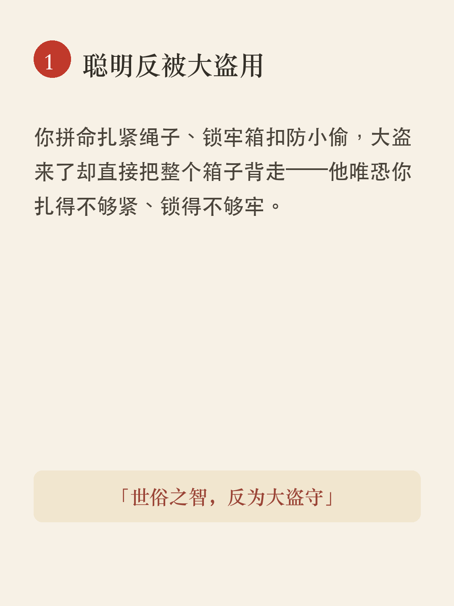
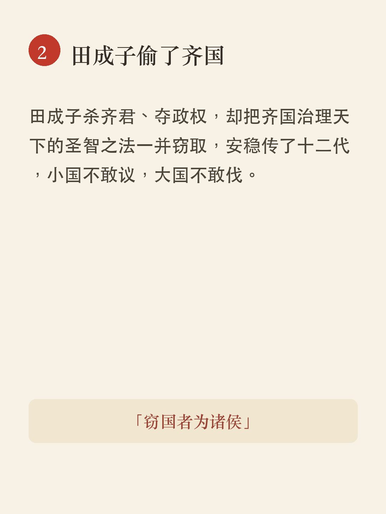
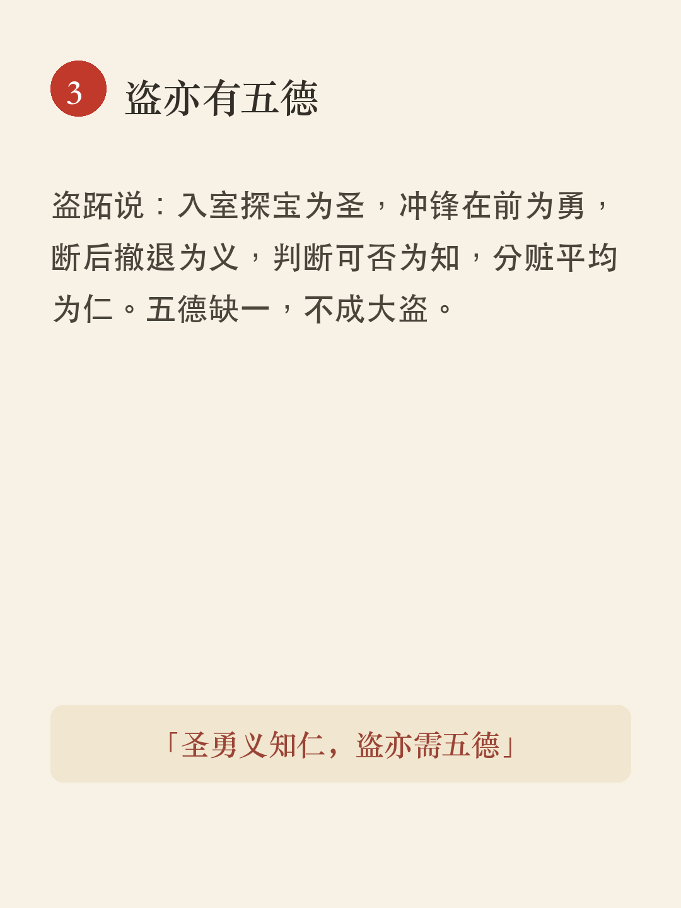
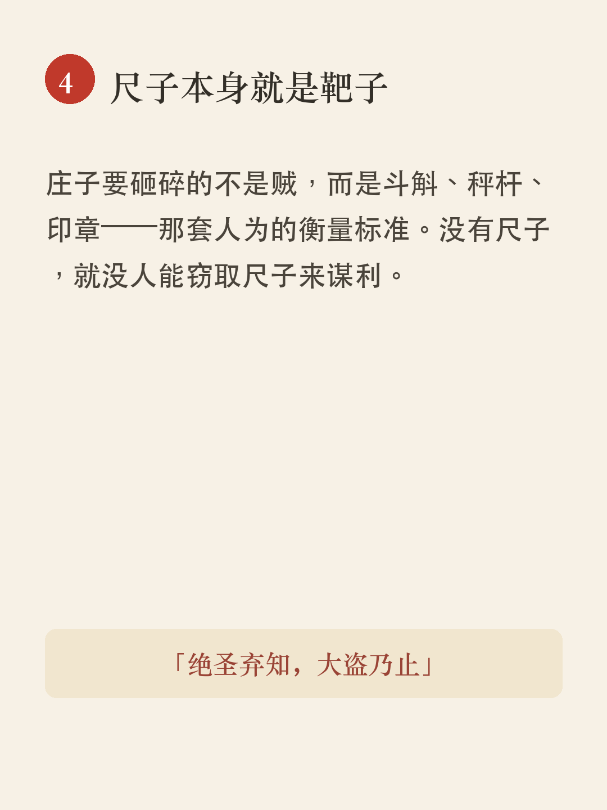
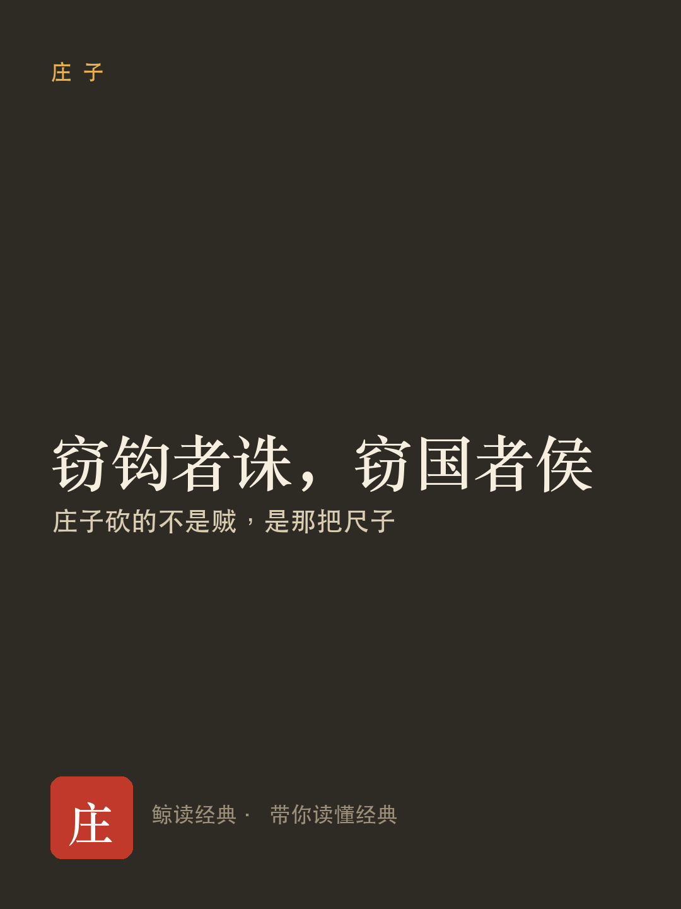
📄 配文·钩子（不剧透）
田成子杀了齐君，却安稳坐了十二代国君——因为他顺手把齐国那套仁义制度也一起偷走了。＋ 讲透版·自成一体（小红书图文）
庄子讲了一个很具体的画面：普通人防小偷，会拼命扎紧绳子、锁牢箱扣。但大盗来了，直接把整个箱子背走，这时候他反而怕你绳子扎得不够紧。庄子用这个比方说的是——你发明来防范坏人的制度，恰恰会被最大的坏人整箱端走。田成子就是那个背箱子的人。他杀了齐国国君，但不光偷了政权，还把齐国那套斗斛、秤杆、印章、仁义道德全部据为己有。结果他背着盗贼的名声，却坐在国君位置上安稳传了十二代，没人敢动他。更狠的是盗跖那段话：做强盗也要讲圣、勇、义、知、仁——探宝、冲锋、断后、判断、分赃，五样缺一不可。圣人教化天下的那套东西，大盗不仅全用上了，而且用得比谁都熟练。所以庄子的结论不是「抓好贼」，而是「绝圣弃知」：把斗斛砸了、秤杆折了、印章烧了。不是说不要秩序，而是他看透了一个事实——只要人为的衡量标准还在，就一定有人去窃取这套标准本身来给自己贴金。庄子这一刀砍的不是贼，是那把定义谁是贼的尺子。
口播稿全文
大家好，我是鱼儿。
偷一个腰带扣会被杀头，偷一整个国家却成了诸侯。更荒诞的是，诸侯的府邸里，照样供奉着仁义道德。这是庄子在书里写下的一句极其锋利的断言：窃钩者诛，窃国者为诸侯。
为什么偷了国家，还能把仁义道德也一起偷走？庄子打了一个很具体的比方。为了防止小偷撬箱子、掏口袋，普通人会拼命把绳子扎紧、把锁扣锁牢，世俗把这叫聪明。可是等到大盗来了，他直接把整个箱子背走，这时候他唯恐你的绳子扎得不够紧、锁扣不够牢。世俗用来防范的聪明，反而成了给大盗打包的工具。
同理，社会为了治理，发明了斗斛来量粮食，又设了秤来称轻重，又立了印章作凭证，甚至标举仁义来矫正人心。但大盗一旦夺权，他不仅偷走国家，还会把这些制度、标准连同仁义道德一起打包偷走。
书里举了田成子的例子。他杀了齐国国君，篡夺了齐国政权。但他不仅偷了国家，还把齐国原本用来治理天下的圣智之法一并偷了。结果就是，他明明背着盗贼的名声，却安稳地坐在国君的位置上，小国不敢非议，大国不敢讨伐，他的家族在齐国安稳传了十二代。这就是用偷来的制度和仁义，守住了自己作为盗贼的身份。
庄子借大盗盗跖的口，把这套逻辑推到了极致。盗跖的徒弟问他，做强盗也有道吗？盗跖说，当然有。能看出屋里藏着什么宝贝，这叫圣；冲锋时第一个进，这叫勇；撤退时最后一个出来，这叫义；能判断能不能下手，这叫知；分赃时绝对平均，这叫仁。这五样不具备，根本成不了大盗。
你看，圣人用来教化天下的仁义圣智，大盗不仅全用上了，而且用得比谁都熟练。善人没有圣人之道无法立足，大盗没有圣人之道同样无法横行。天下善人少而不善的人多，那么圣人之道对天下的好处少，害处反而多。
这就是庄子给出的沉重结论：圣人不死，大盗不止。
只要人为设定的标准、名教和制度还在，就会有人去钻营、去窃取。你推崇贤能，百姓就会为了争夺贤名而互相倾轧；你任用智巧，百姓就会为了利益而互相偷盗。庄子看透了这一点，所以他给出的解法极其决绝：绝圣弃知，大盗乃止。把那些用来衡量、评判、标榜的人为标准全部砸碎，毁掉斗斛、折断秤杆、烧掉印章，人不再被外在的尺子去丈量，才会回到质朴，不再争斗。
回到开头那个偷腰带扣与偷国家的对比。庄子这一刀，砍的不是具体的贼，而是那把用来定义贼的尺子。当我们不再用外在的仁义标准去标榜自己、也不再用这套标准去苛求别人时，那些企图窃取这套标准来谋利的大盗，也就失去了下手的靶子。
88新版洞见scene公版✓ 判官过审轮扁上堂：君之所读者，古人之糟粕
🎬 文字只是捕鱼的竹篓，真正的智慧不在书中，而在无法言传的真实体悟里。
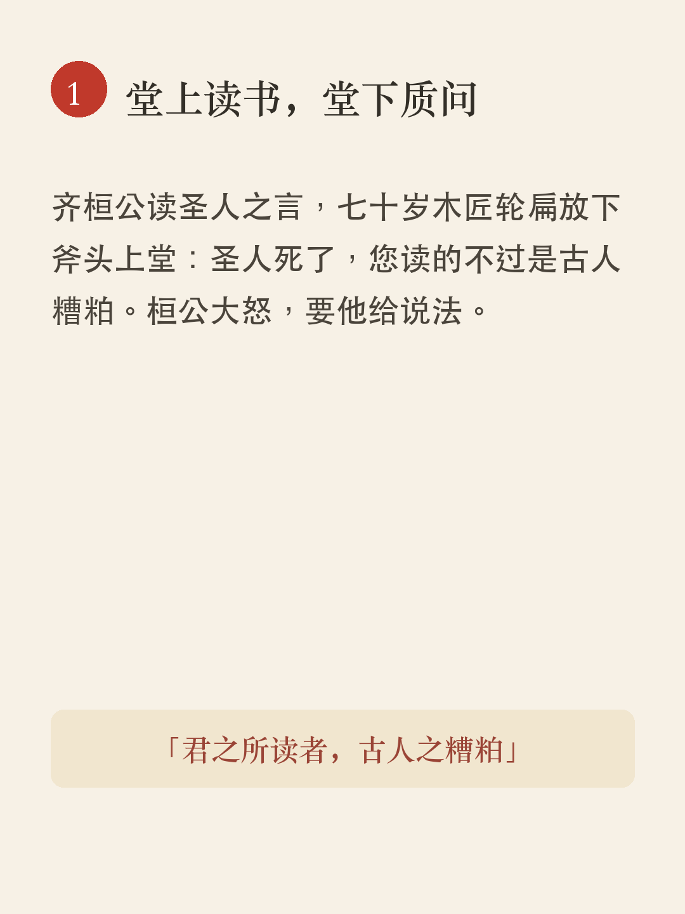
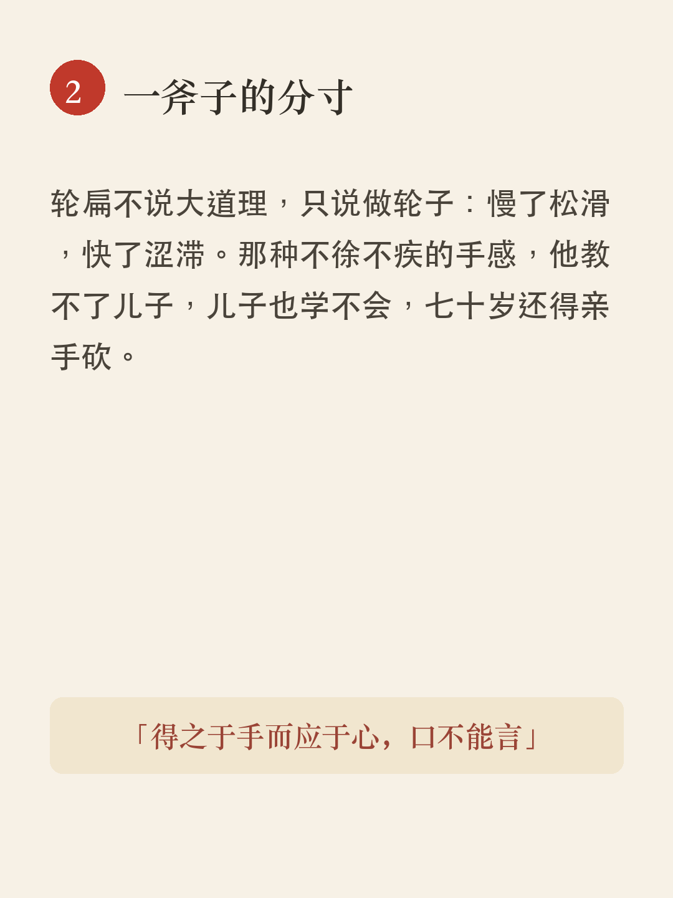
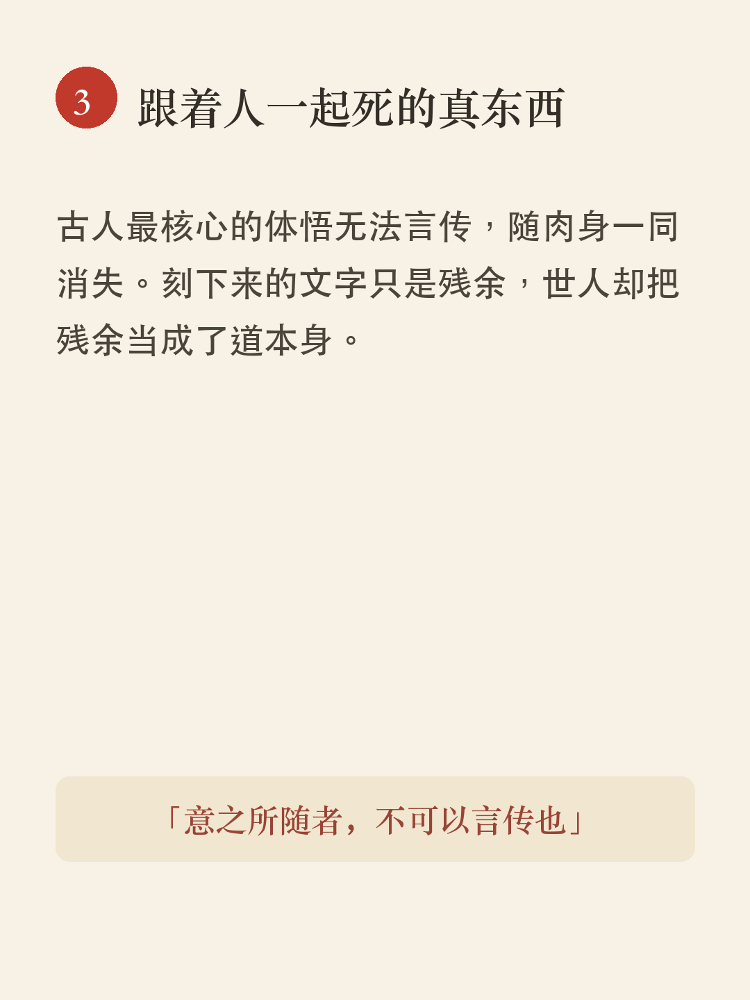
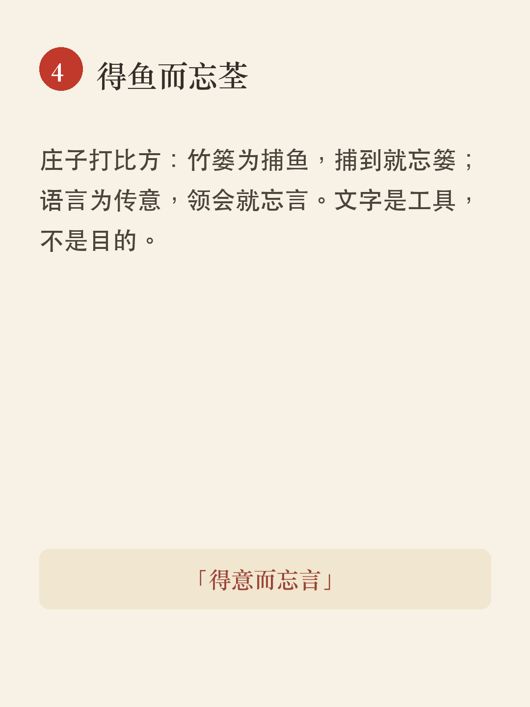
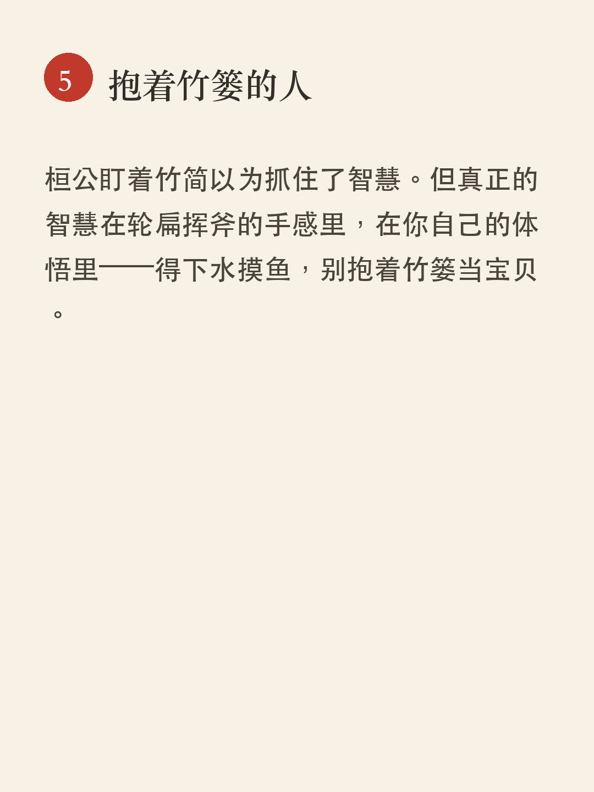
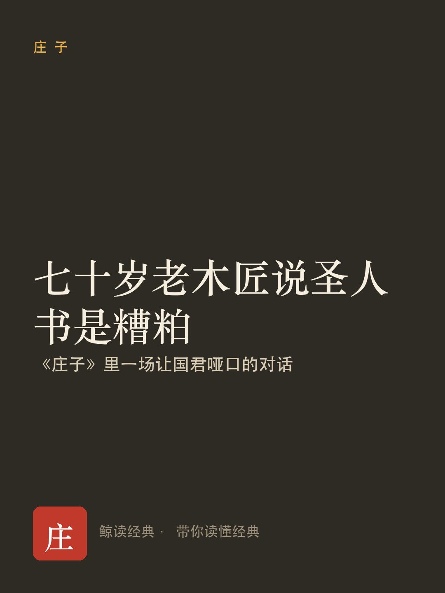
📄 配文·钩子（不剧透）
齐桓公在堂上读圣人之言，堂下砍车轮的七十岁老木匠放下斧头说：您读的都是糟粕。＋ 讲透版·自成一体（小红书图文）
轮扁敢说出「糟粕」两个字，靠的不是辩才，是一辈子砍车轮砍出来的手感。他说榫头砍慢了松滑、砍快了涩滞，那个「不徐不疾」的分寸，他连亲儿子都传不了——这不是谦虚，是手艺人的诚实。庄子借这个故事戳穿了一件我们不太愿意承认的事：文字能记录的，永远是体验的残骸。真正活着的东西——手感、直觉、分寸感——跟着人一起死了。所以庄子给文字安排了一个很低的位子：竹篓。竹篓是用来捕鱼的，捕到了就该放下，别抱着竹篓研究一辈子。这话放到今天，就是提醒所有靠「读」来学习的人：读完一本书最大的收获，不是记住了多少金句，而是你在某个瞬间忽然「懂了」，那个懂不在书上，在你自己身上。
口播稿全文
大家好，我是鱼儿。
我们总习惯把书本当作智慧的凭证，但《庄子》里有个七十岁的老木匠，指着国君手里的书说，圣人早就死了，你现在读的，不过是古人留下的糟粕。
这个老木匠叫轮扁。当时齐桓公在堂上读书，他在堂下做车轮。他放下手里的活儿，上堂质问，桓公说读的是圣人之言。轮扁问圣人还在世吗？桓公说死了。轮扁直接断言，那您读的就是古人的糟粕。
桓公大怒，让他给个说法，否则就处死。
轮扁没讲大道理，只讲了自己做车轮的手艺。他说，砍削车轮，动作慢了，榫头就松滑不牢固，也就是“徐则甘而不固”；动作快了，就涩滞砍不进去，也就是“疾则苦而不入”。只有“不徐不疾，得之于手而应于心，口不能言，有数存焉于其间”。
他甚至说，这种手感里的分寸，“臣不能以喻臣之子，臣之子亦不能受之于臣”。所以他才说“行年七十而老斫轮”，七十岁了还得自己亲手做车轮。古人带着他们那些无法言传的真东西死了，留下来的文字，当然只是糟粕。
轮扁说的，其实是手艺里那种只能意会、无法言传的肌肉记忆和直觉。推到读书和求道上，也一样。书里写下的只是文字，语言真正珍贵的，是它背后的意思。而那个最核心的意思，往往是跟着具体的情境和体验走的，根本没法用语言完全传递。世人觉得书珍贵，是因为把文字本身当成了道。但原著里点得很透：书不过语，语之所贵者，意也，意有所随。意之所随者，不可以言传也。
为了把这层意思说透，书里还打了个很实在的比方：“荃者所以在鱼，得鱼而忘荃；蹄者所以在兔，得兔而忘蹄；言者所以在意，得意而忘言。”捕鱼的竹篓是为了抓鱼，抓到了鱼，就可以忘掉竹篓；语言是为了传达意思，领会了意思，就可以忘掉语言。
回到堂上那个场景，桓公盯着手里的竹简，以为抓住了圣人的智慧。但真正的智慧，不在那些被刻下来的文字里，而在轮扁那“不徐不疾”的挥斧之间，在你自己“得之于手而应于心”的真实体悟里。文字只是捕鱼的竹篓，抓到了鱼，就该忘掉竹篓。只是这世上，多的是抱着竹篓当宝贝的人，却少有人真肯下水去摸那条鱼。
88新版洞见scene公版✓ 判官过审无用之用：‘匠者不顧’的那棵樗樹
🎬 怕没用而削足适履，却不知不合墨线的缺点，让你免于被当成工具收割。
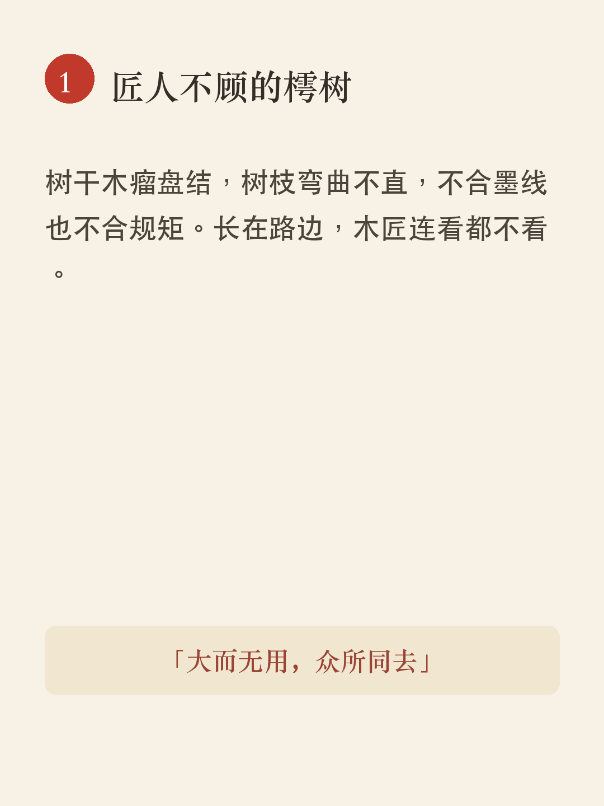
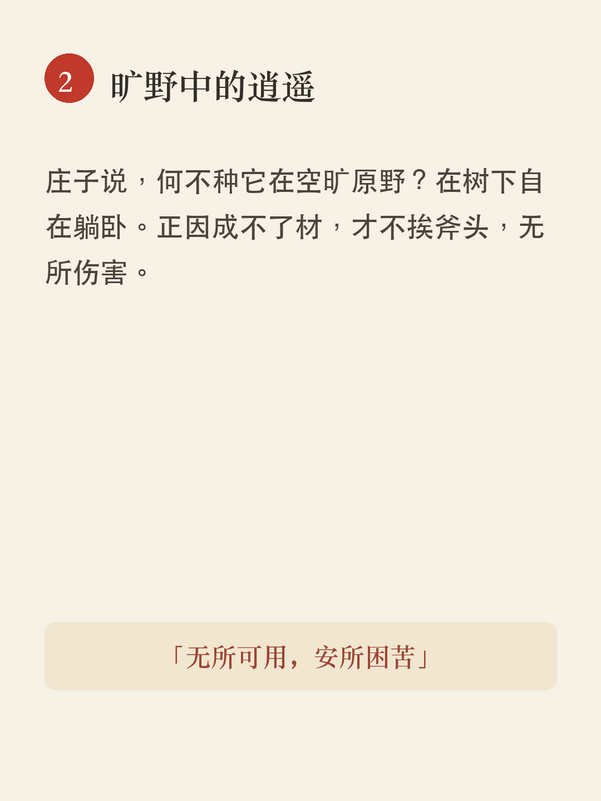
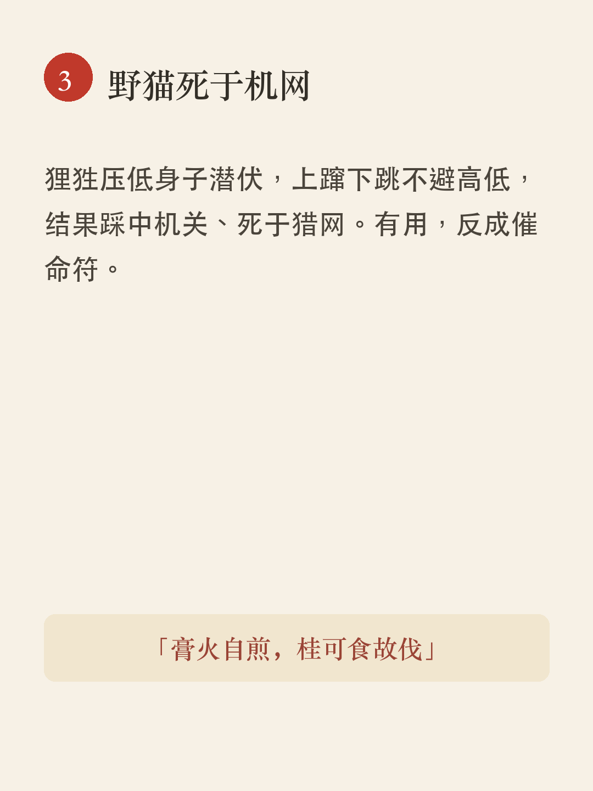
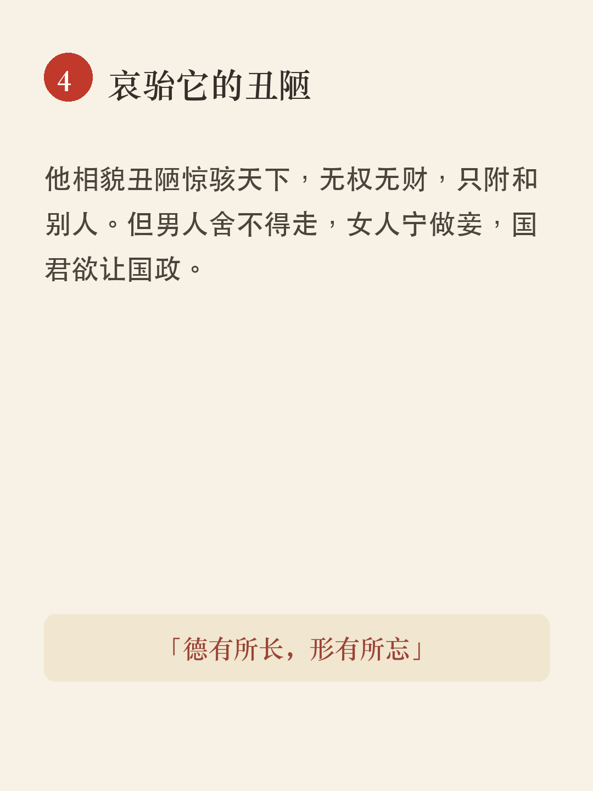
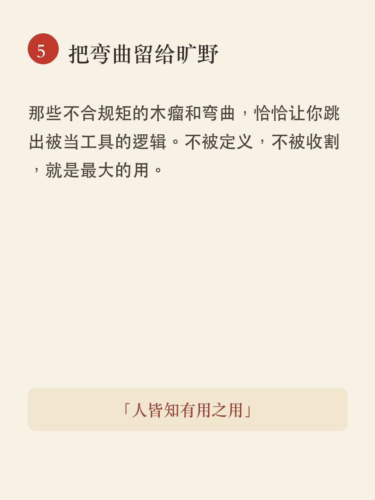
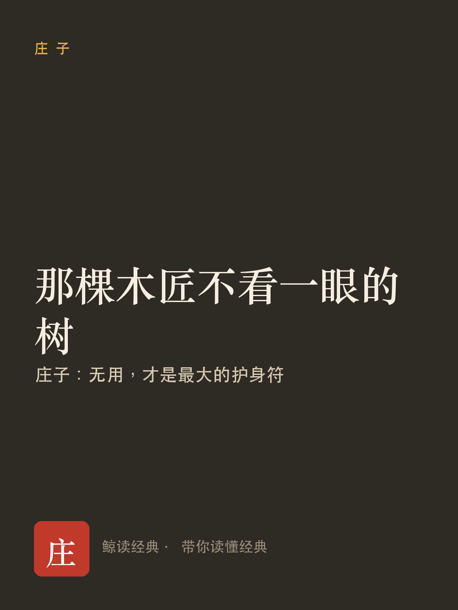
📄 配文·钩子（不剧透）
《庄子》里有棵树，长得歪七扭八，木匠路过看都不看——庄子却说，这才是它活下来的原因。＋ 讲透版·自成一体（小红书图文）
《庄子·逍遥游》里那棵樗树，原文用了四个字形容它的命运：「匠者不顾」。不是匠人嫌弃它，是它根本不在匠人的评价体系里——树干有木瘤，不合墨线；树枝弯弯绕，不合规矩。所有「有用」的标准，它一条都对不上。
但庄子看到了另一面：桂树因为皮能吃，被砍了；漆树因为汁能用，被割了；野猫因为身手灵活上蹿下跳，踩进了猎网。它们的死法各不相同，死因却一样——太有用了。
《德充符》里那个哀骀它，丑到「天下惊骇」，没权没钱没主张，但跟他相处过的人全舍不得走。庄子用四个字点破：「德有所长，形有所忘。」不是丑变成了美，是那个「形」的缺陷替他筛掉了所有只看皮囊的人，留下的全是看见内在的人。
所以庄子说的「无用」，从来不是躺平，而是一种清醒的自我保护。当你拼命把自己削直、磨光、塞进别人的绳墨里，你就成了一块合格的木材——但也意味着随时可以被拿去用、被消耗、被替换。
那些让你焦虑的「不够标准」「不合规矩」的部分，也许恰恰是你身上最不该砍掉的木瘤。把它安放在你自己的旷野里就好。不被斧斤所伤，这件事本身就是用处。
口播稿全文
大家好，我是鱼儿。
我们总怕自己“没用”，怕身上的短板暴露出来，拼命想把自己打磨成一块符合标准的材料。但《庄子》里有一个很反直觉的洞见：很多时候，正是你身上那些“没用”的特质，甚至是你眼里的缺点，在关键时刻保全了你。
《庄子·逍遥游》里写到一棵叫樗的大树。这棵树长得实在抱歉，树干木瘤盘结，不合墨线；树枝弯弯曲曲，不合圆规和角尺。它长在路边，木匠连看都不看它一眼。
朋友觉得这树大而无用，庄子却说，你既然有这么大一棵树，愁它没用，为什么不把它种在空旷的原野上？你可以在树旁悠闲地散步，在树下自在地躺卧。正因为它什么材都成不了，所以不会挨斧头砍，没有什么东西能伤害它。
相反，书里写了另一种动物，叫狸狌，也就是野猫。它压低身子潜伏，等候猎物；上蹿下跳，不避高低。结果呢？往往踩中机关，死在猎网里。
桂树因为树皮可以食用，所以被砍伐；漆树因为汁液可以使用，所以被割裂。山木是自己招来砍伐，膏火是自己招来煎熬。这就是庄子说的，世人都知道有用的用处，却不懂得无用的用处。
当我们拼命追求有用，把自己塞进社会设定的各种标准、规矩和绳墨里时，我们就成了那棵符合规格的木材，或者那只上蹿下跳的野猫。你的“有用”，让你被工具化、被消耗、被卷入各种陷阱。而那些看似无用的特质，那些不符合世俗标准的弯曲和木瘤，恰恰让你跳出了被当作工具使用的逻辑。这种“无用”让你不被轻易定义，不被随意收割。
这种无用，放到人身上看，甚至是一种更深的护身之道。
《德充符》里写了好几个形体残缺的人。比如那个叫哀骀它的人，相貌丑陋得让天下人惊骇。他没有权势救人，没有财富让人吃饱，也不主动倡导什么，只是附和别人。但跟他相处过的男人舍不得离开，女人宁愿给他做妾。鲁哀公欲把国政交给他，他迟疑着应答，婉言辞让；鲁哀公自觉惭愧，仍将国政委于他。可没过多久，哀骀它就离他而去了，留下鲁哀公怅然若失，觉得连这国家都没什么可留恋的。
还有那些跛脚、驼背、脖子上长着大瘤子的人，去游说国君，国君反而非常喜欢他们；再看那些形体健全的人，反倒觉得他们的颈项粗大僵直，十分别扭。
庄子点破了一个真相：当一个人的内在德行有所长处时，别人就会忘记他形体上的缺陷。形体上的缺，在世俗眼里是劣势，但正是这种外在的无用和残缺，过滤掉了那些只看重表象的交往，反而保全了他的内在完整。
所以，当你因为自己不够有用、不够符合某种标准而焦虑时，不妨想想那棵木匠看都不看的樗树。不用急着把自己削足适履，塞进别人的绳墨和规矩里。把你那些看似无用的部分，安放在你自己的旷野里。不被斧斤所伤，不被外物所害，这本身，就是一种最大的用处。
88新版映照scene公版✓ 判官过审烏鳶與螻蟻：莊子臨終的一句「何其偏也」
🎬 怕失去而内耗，庄子临终一句被乌鸦吃与被蚁吃有何偏心，足以化解执念。
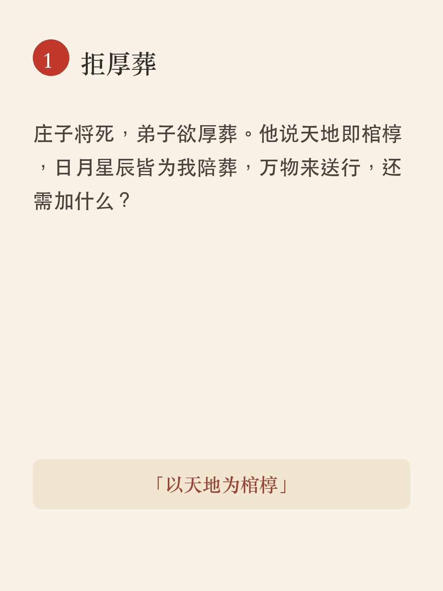
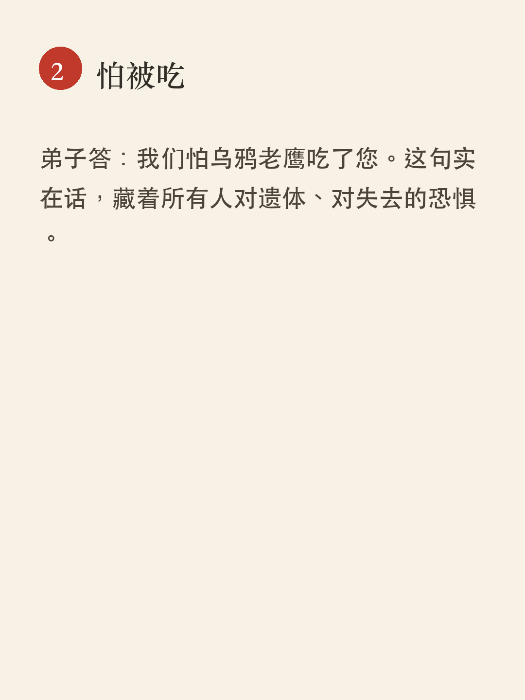
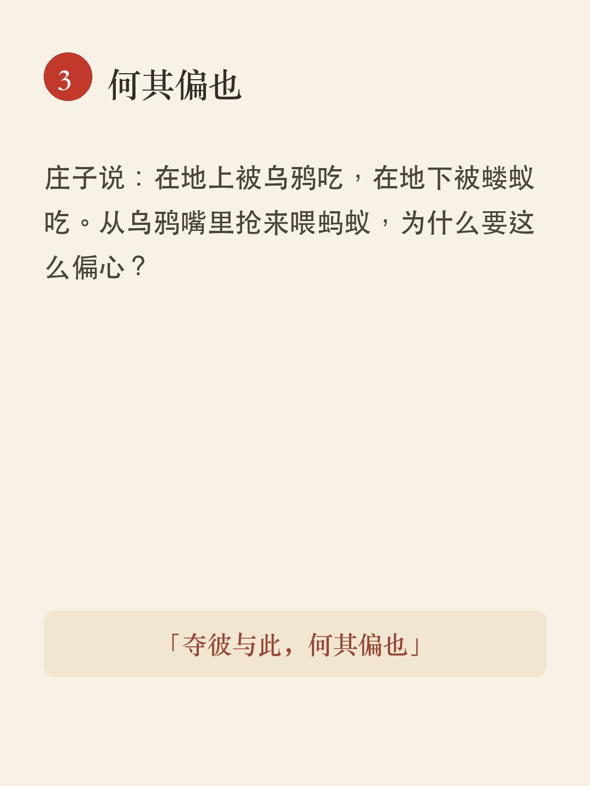
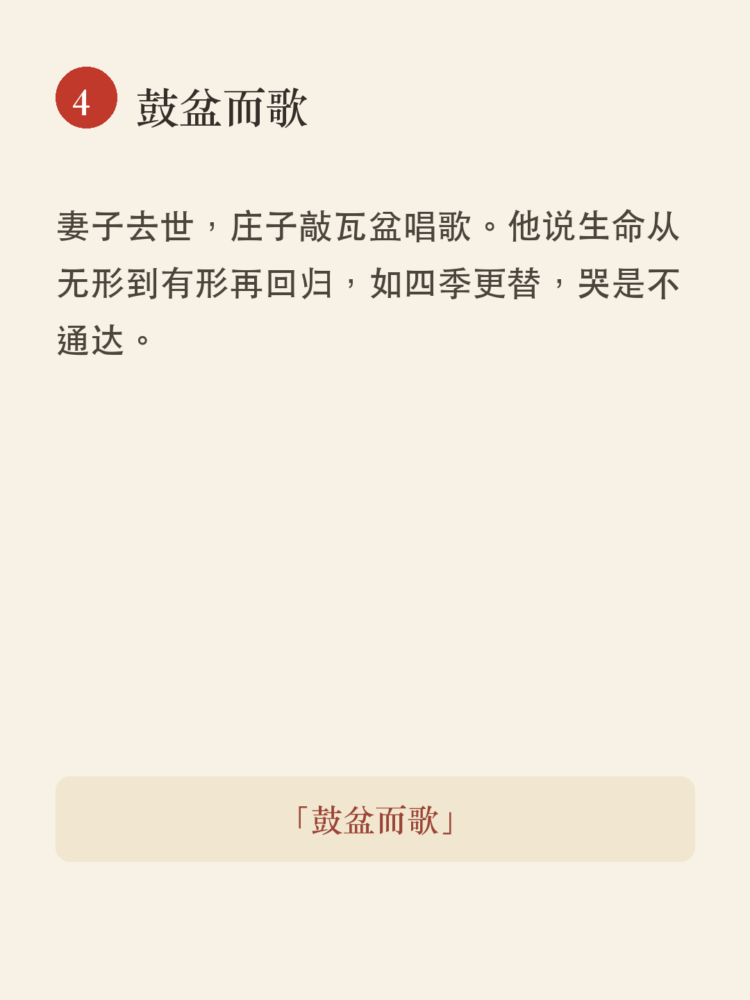
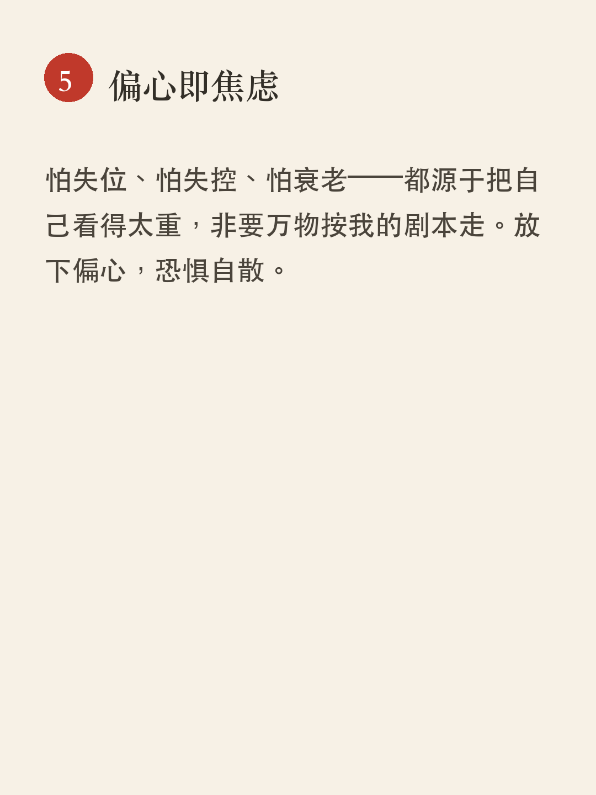
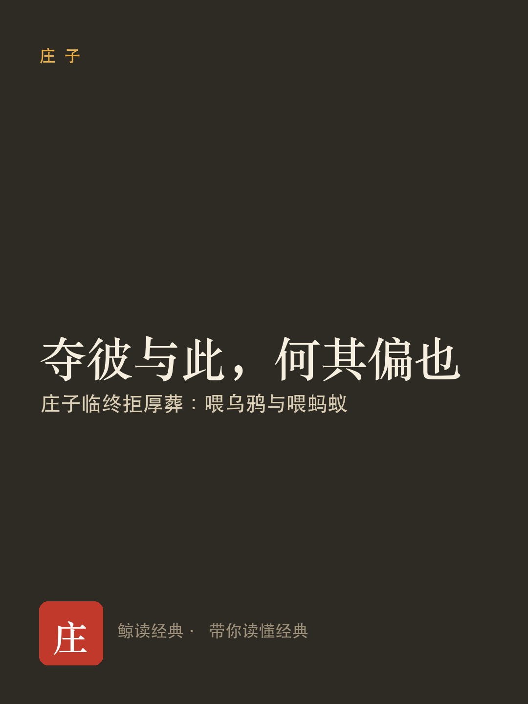
📄 配文·钩子（不剧透）
弟子说怕乌鸦吃了您，庄子回了一句让人沉默的话。＋ 讲透版·自成一体（小红书图文）
庄子临终，弟子想厚葬，说了一句很朴素的话：怕乌鸦老鹰吃了您。庄子回：在地上被乌鸦吃，在地下被蝼蚁吃，你们从乌鸦嘴里抢来喂蚂蚁，何其偏也。\n\n这句话的黑色幽默在于，弟子明明出于敬爱，却被指出是一种偏见。喂乌鸦和喂蚂蚁，在自然面前没有高低。人之所以不忍，是把这副身体当成「我的」，非要按自己的意愿安置。\n\n这种偏心不止对遗体。妻子去世时庄子鼓盆而歌，惠子觉得冷血。庄子说生命从无到有再归无，如春夏秋冬，嗷嗷跟着哭是不通达。他不是不悲，是看见生死和昼夜交替一样自然。\n\n我们今天怕失位、怕失控、怕衰老，本质和弟子那句「怕被吃」一样——总想按自己的剧本安排一切，一旦偏离就恐慌内耗。庄子说骷髅的境界：上无君、下无臣、无四时之劳，以天地为春秋，南面称王也比不上。\n\n天地是巨大的房间，我们只是恰好来走一遭。死死护着带不走的皮囊和执念，就是偏心。
口播稿全文
大家好，我是鱼儿。
我们这辈子，似乎都在忙着护住点什么。护住财富，护住体面，甚至到了最后，还想护住自己这副皮囊，求一个风光的告别。但如果你总觉得失去点什么就心里发慌，不妨听听庄子临终前和弟子的一段对话。他用一个极其具体的画面，把人对失去的恐惧，拆解得干干净净。
书里写道，庄子快去世的时候，弟子们想给他办一场厚葬。庄子拒绝了，他说，我把天地当作棺椁，把日月当作连璧，星辰当作珠玑，万物都来为我送行，我的葬具难道还不齐备吗？还要加什么呢？
弟子们还是不放心，说了一句很实在的话：我们怕乌鸦和老鹰吃了您啊。
庄子回了一句非常通透的话：放在上面被乌鸦老鹰吃，埋在地下被蝼蚁吃，你们这是从乌鸦嘴里抢过来喂蚂蚁，为什么要这么偏心呢？
“夺彼与此，何其偏也。”这句话听起来有点黑色幽默，甚至带着点让人不适的残酷。弟子们出于敬爱，想保全老师的遗体；但在庄子眼里，这种保全，本质上是一种人为的偏见。在自然规律面前，喂乌鸦和喂蚂蚁，没有任何高低贵贱之分。人之所以觉得害怕、觉得不忍，是因为我们总把自己看得太重，觉得这副身体是我的，必须按照我的意愿去安置。
这种对生死的彻底放下，不是庄子临终时才有的豁达。书里记载，他的妻子去世时，好朋友惠子去吊唁，却看到庄子正岔开双腿坐着，敲着瓦盆唱歌。惠子觉得这太不近人情了。
庄子解释说，妻子刚死的时候，他怎么可能不感慨悲伤。但他往回推想，生命最初本来就没有形体，没有气息，在恍惚之间变化出气，气变化出形，形变化出生命。现在又变化回到了死亡。这就好像春夏秋冬四季更替一样。现在她安然地躺在天地这个巨大的房间里，如果他还在旁边嗷嗷地跟着哭，那就是不通达生命的规律了，所以他停止了悲伤。
你发现没，我们今天很多人的焦虑，其实都来自这种不通达的偏心。我们在职场上怕失去位置，在感情里怕失去控制，在健康上怕失去青春。我们总想按照自己的剧本去安排一切，一旦事情没有按照预期的方向走，或者面临失去，就会陷入巨大的恐慌和内耗。
庄子敲着瓦盆唱歌，也调侃弟子何必偏心，并不是冷血，而是他看透了生命的底色。书里借骷髅的嘴说出过一种境界：死了之后，上面没有君主，下面没有臣子，也没有四季的劳碌，从容地以天地为春秋，这种快乐连南面称王都比不上。书里的人物在对话时也提到，死生就像昼夜交替一样自然。
当我们不再把自己看作宇宙的中心，不再执着于从乌鸦嘴里抢过来喂蚂蚁，那种对失去的恐惧也就消散了。
如果哪天你又因为害怕失去某样东西而焦虑失眠，去想想那个敲着瓦盆唱歌的人，想想那句何其偏也。天地本来就是一个巨大的房间，春夏秋冬照常流转，我们只是恰好来走了一遭，实在没必要死死护着那点带不走的皮囊和执念。
88新版故事scene公版✓ 判官过审朝三暮四：狙公改口“朝四暮三”，眾狙立刻翻臉為笑
🎬 不被薪资与打折的包装话术牵动情绪，只需默算那七个总数未变的橡子。
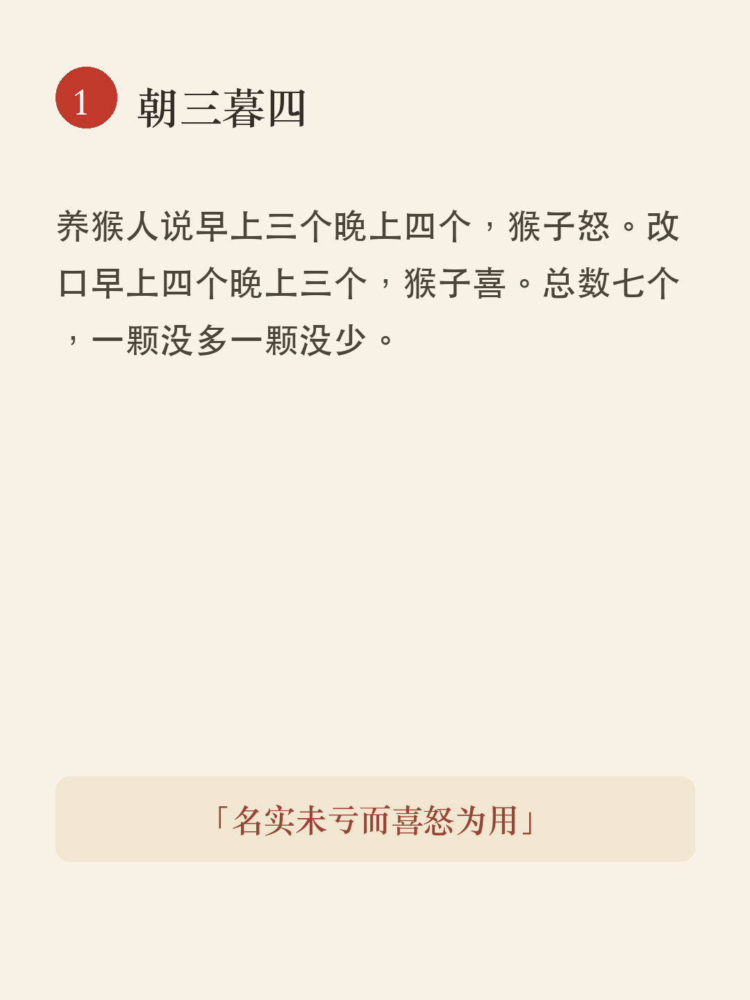
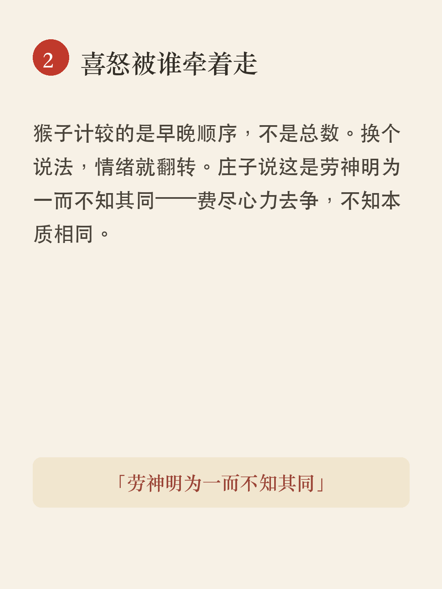
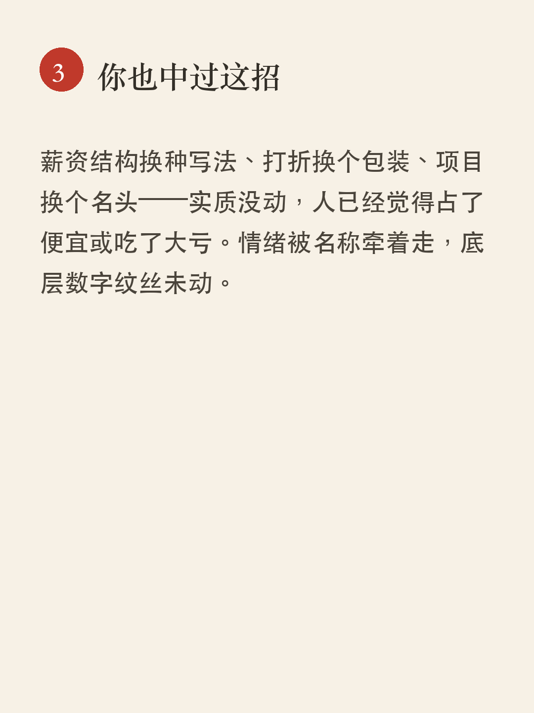
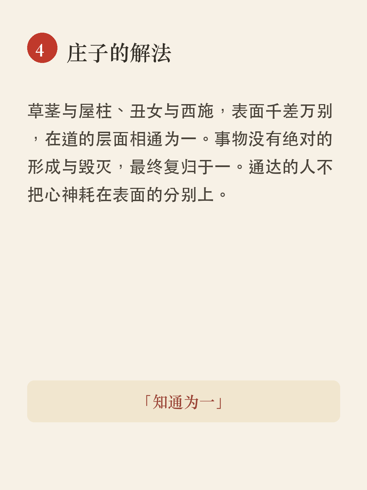
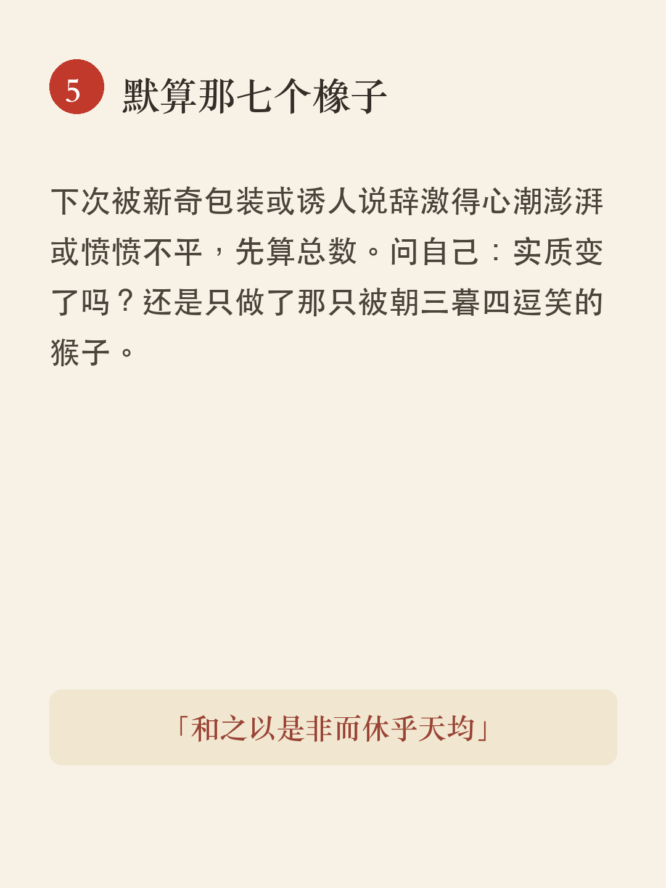
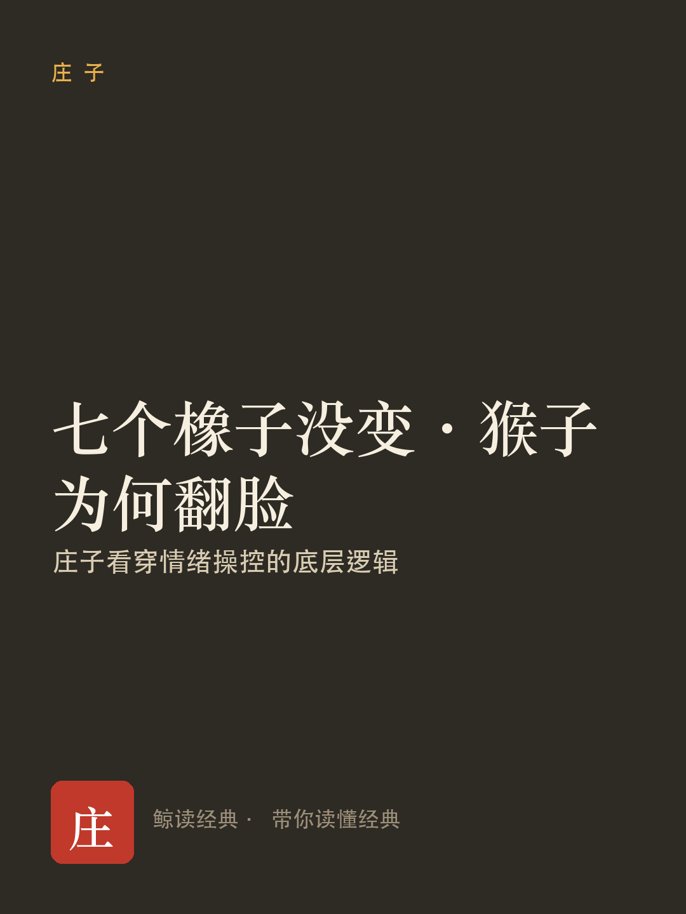
📄 配文·钩子（不剧透）
养猴人只是把'朝三暮四'改口成'朝四暮三'，猴子立刻从暴怒变成欢喜——七个橡子一颗没变，变的是什么？＋ 讲透版·自成一体（小红书图文）
《庄子·齐物论》里这个寓言，我们今天拿它形容人反复无常，但原文指向完全不同。
养猴人分橡子：朝三暮四，猴子怒；改口朝四暮三，猴子悦。庄子用六个字点破本质——'名实未亏而喜怒为用'。名称换了，实质没动，但喜怒已经被这套说辞调动起来。猴子耗费心神去计较早晚顺序的差别，庄子管这叫'劳神明为一而不知其同'。
这个结构在我们身边反复出现。薪资拆成底薪加绩效加补贴，总数不变，人觉得'结构更合理了'。商品原价划掉写个折扣价，实际支付一分没少，人觉得'赚到了'。项目换个名头重新立项，内容一模一样，团队觉得'有了新方向'。我们的情绪被表面的名称和顺序牵着走，却从不停下来算那笔最简单的账：总数变了吗？
庄子的解法是四个字——'知通为一'。草茎和屋柱、丑女和西施，表面千差万别，在道的层面相通为一。事物的分离就是它的形成，形成就是毁灭，万物最终复归于一。通达的人明白这一点，不把心神耗在表面的分别上，而是'和之以是非而休乎天均'——把是非调和起来，安于自然的均衡。
所以下次被某套说辞弄得心潮澎湃或愤愤不平的时候，先在心里默算那七个橡子。不是叫你什么都不在乎，而是在情绪启动之前，先分清自己是在回应实质的变化，还是仅仅被调换了一下数字顺序。
口播稿全文
大家好，我是鱼儿。
我们每天被各种话术、包装、标题牵着鼻子走，情绪跟着大起大落，却很少停下来算一笔账：我得到的实质，真的变了吗？
《庄子》里有一个特别生动的场景，把这种被说法操纵的心理，扒得干干净净。
书里写道，有个养猴子的人给猴子分橡子。他跟猴子商量，早上给三个，晚上给四个。猴子们听了，全都发脾气。养猴人马上改口，早上给四个，晚上给三个呢？猴子们立刻满心欢喜。
这就是“朝三暮四”的来历。我们今天用它来形容人反复无常，但在《庄子》的原文里，这个故事讲的其实是一个关于认知和情绪操控的深刻寓言。
猴子为什么怒，又为什么悦？因为总数七个橡子根本没变，只是把数字的顺序调换了一下。书里用一句话点破了这个现象的本质，叫“名实未亏而喜怒为用”。名称和实质都没有任何变化，但喜怒却被这套说辞调动起来了。猴子耗费心神去计较早晚的差别，却不知道总数是一样的，书里管这叫“劳神明为一而不知其同”。
这其实也是我们很多人的处境。面对同样的薪资结构、同样的项目安排、同样的商品打折，对方只是换了一个包装，换了一套说辞，我们就觉得占了便宜，或者觉得吃了大亏。我们的情绪，完全被表面的名称牵着走，却忽略了底层的实质。
要看穿这种话术和表象，《庄子》给出的解法，叫作“知通为一”。
书里说，细小的草茎和粗大的屋柱，丑陋的女人和美丽的西施，这些在表面上千差万别、甚至显得荒诞怪异的事物，在“道”的层面都是相通为一的。事物的分离，也就是它的形成；它的形成，也就是它的毁灭。万物本来就没有绝对的形成与毁灭，最终都复归于一。
通达的人，明白这个相通为一的道理，所以不会把心神耗费在表面的分别和争论上，而是顺应事物的自然本性，把智慧寄托在平常的日用之中。这就是看穿话术的底气。当你明白事物的本质并没有因为表述的变化而改变时，你就不会轻易被激怒，也不会盲目狂喜。
书里还说，圣人是“和之以是非而休乎天均”，把是非调和起来，安于自然的均衡。
下次当你再被某个新奇的包装、某套诱人的说辞弄得心潮澎湃或者愤愤不平时，不妨在心里默算一下那七个橡子。看看自己是在为实质的变化而反应，还是仅仅在做那只被朝三暮四逗笑的猴子。
88新版故事scene公版✓ 判官过审井底之蛙：擅一壑之水，安知東海之樂？
🎬 认知碰壁无需否定能力，限制你的往往并非天资，而是空间、时间与观念。
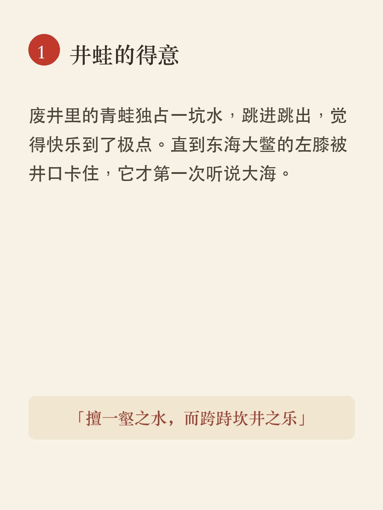
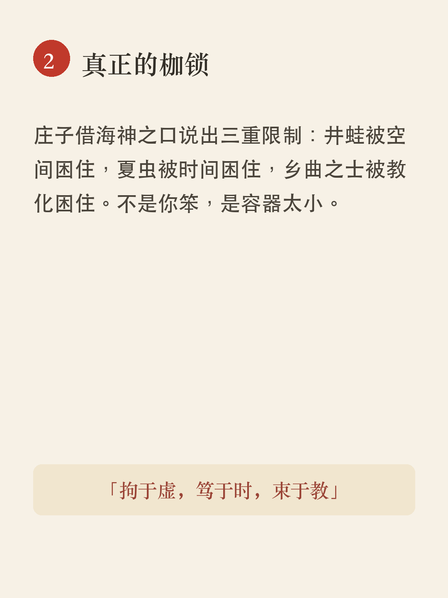
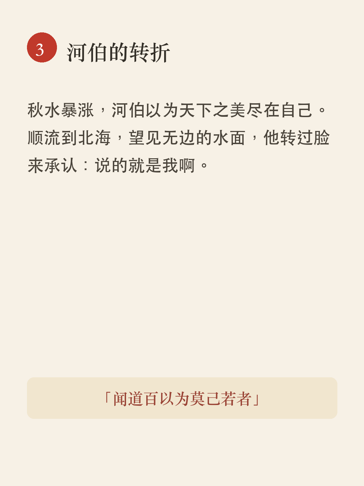
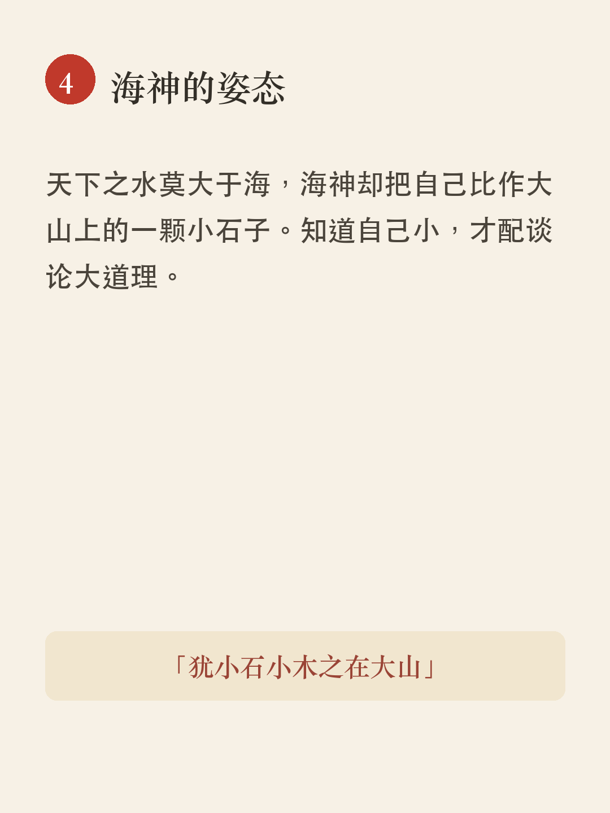
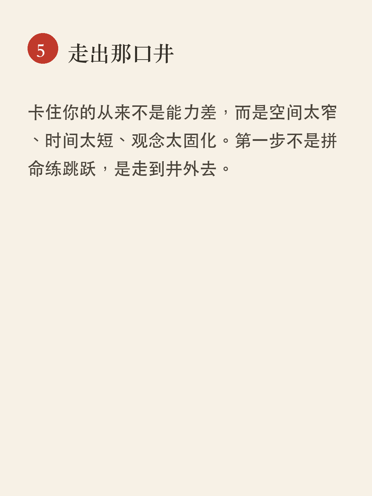
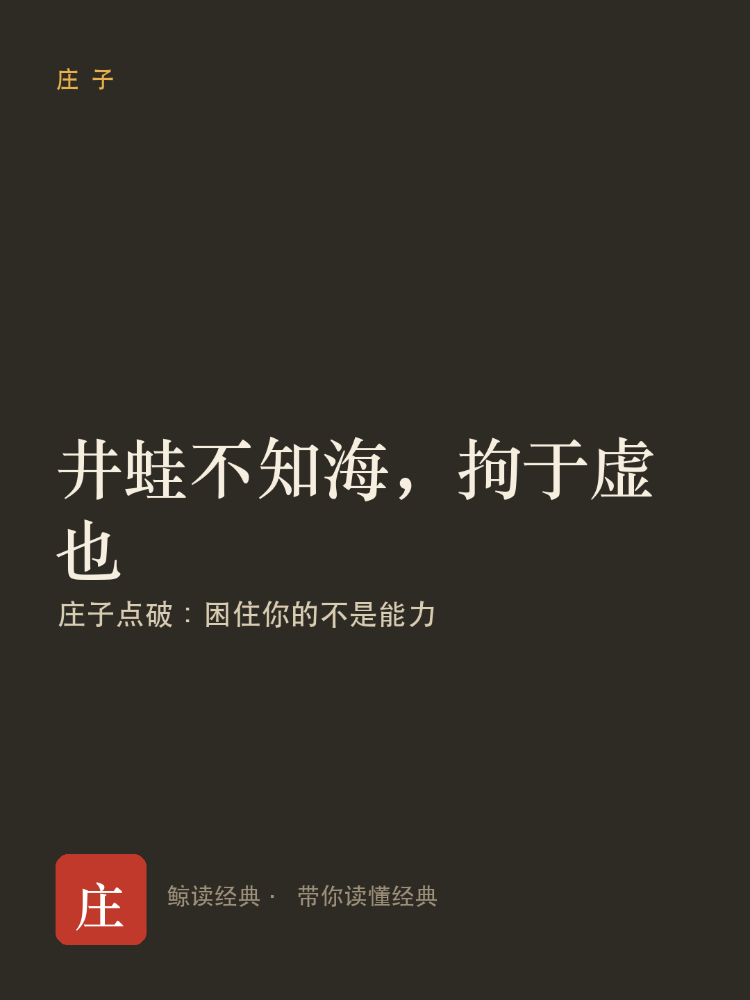
📄 配文·钩子（不剧透）
东海大鳖的左膝被井口卡住的那一刻，青蛙的快乐就碎了。＋ 讲透版·自成一体（小红书图文）
庄子写井蛙，重点从来不是嘲笑它跳得不够高。
海神说
口播稿全文
大家好，我是鱼儿。
你有没有过这种感觉，在一个小圈子里待久了，觉得自己什么都懂，直到某天遇到一个完全不在一个维度的人，才发现自己之前的得意有多可笑？
《庄子》里讲过一个很具体的画面。一只住在废井里的青蛙，对东海的大鳖炫耀自己的快乐。它说，我出来就在井栏上跳跃，进去就在井壁破砖边休息，跳进水里，水托着我的下巴，踩进泥里，泥没过我的脚背，周围的虫子都不如我。我独占这一坑水，快乐到了极点。
结果东海的大鳖想进去看看，刚想迈左脚进去，右膝盖就先被井口卡住了。于是它退出来，给青蛙讲大海：千里之遥不足以形容它的大，千仞之深不足以形容它的深，大禹时代十年九涝，海水没增加；商汤时代八年七旱，海岸没后退。青蛙听完，惊慌失措，觉得自己若有所失。
我们总以为“井底之蛙”是在嘲笑青蛙能力不行、眼界太窄。但庄子借海神之口点破了真正的限制来自哪里。海神说，“井蛙不可以语于海者，拘于虚也；夏虫不可以语于冰者，笃于时也；曲士不可以语于道者，束于教也。”
用大白话说，不能跟井蛙谈论大海，是因为它被所处的空间局限了；不能跟夏天的虫子谈论冰雪，是因为它被生存的时间局限了；不能跟乡曲之士谈论大道，是因为他被所受的教化束缚了。限制你的，往往不是你天生笨或能力差，而是你所在的空间、时间和教化。
书里还写了黄河之神河伯。秋天涨水，河面宽阔得连对岸的牛马都分不清。河伯欣然自喜，以为天下的美景都在自己这里。等他顺流而下到了北海，向东望去，看不见水的尽头。这时候河伯才转过脸来，对着海神叹息：古人说，“闻道百以为莫己若者”，说的就是我啊。如果不是来到你的门前，我就危险了，我会长久被明白大道理的人耻笑。
海神怎么回他呢？海神说，你现在走出了河岸，看到了大海，知道了自己的鄙陋，这样就可以和你谈论大道理了。
河伯和井蛙的区别在哪？井蛙听完对大海的描述，只是惊慌失措。而河伯是主动反省，承认自己的局限。海神自己呢？海神说，天下之水没有比海更大的，但我从未因此自满。因为我把自己放在天地之间，就像小石头小树木在大山里一样，正觉得自己小，又怎么会自满呢？
当我们觉得生活卡壳、认知碰壁的时候，不必急着自我否定，以为是自己能力不够。庄子提醒我们，去检查一下困住你的那口井——是你待在的空间太小，经历的时间太短，还是被某一种固定的观念束缚了。打破局限的第一步，不是拼命在井里练习跳跃，而是想办法走到井外，去见一见那片不为旱涝增减的东海。
87新版人物thread公版✓ 判官过审庄子过惠子墓：“吾無以為質矣”——惠子，唯一的對手
🎬 被赞同包围却依然孤独，你缺的并非朋友，而是能照出局限的对手。
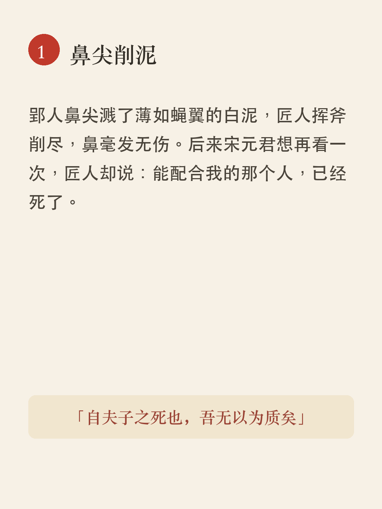
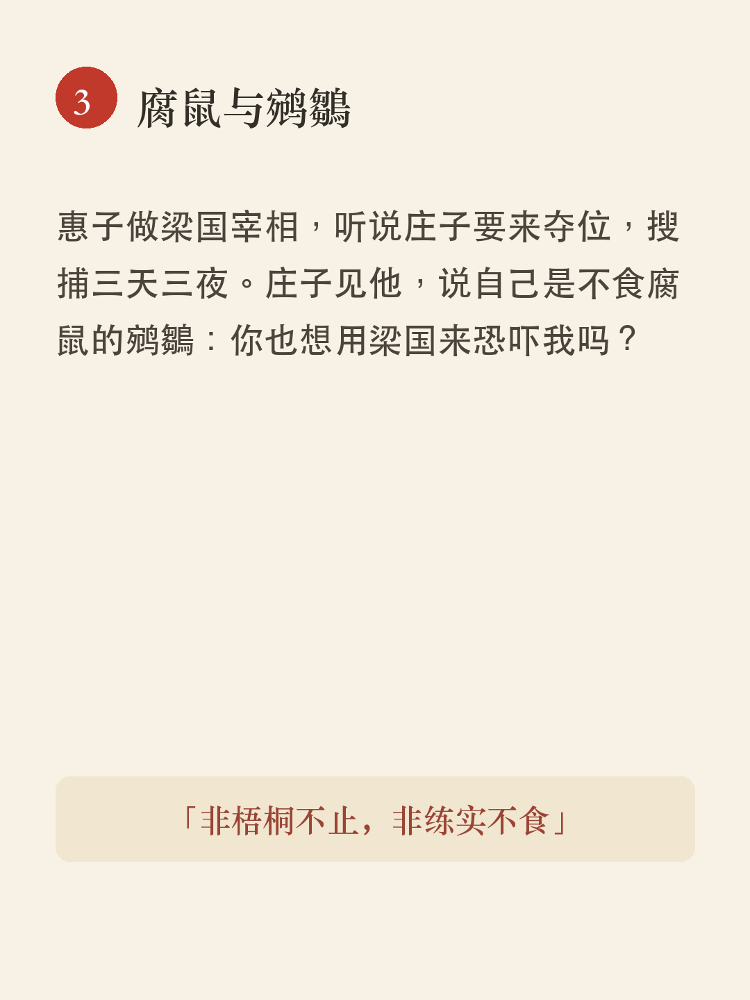
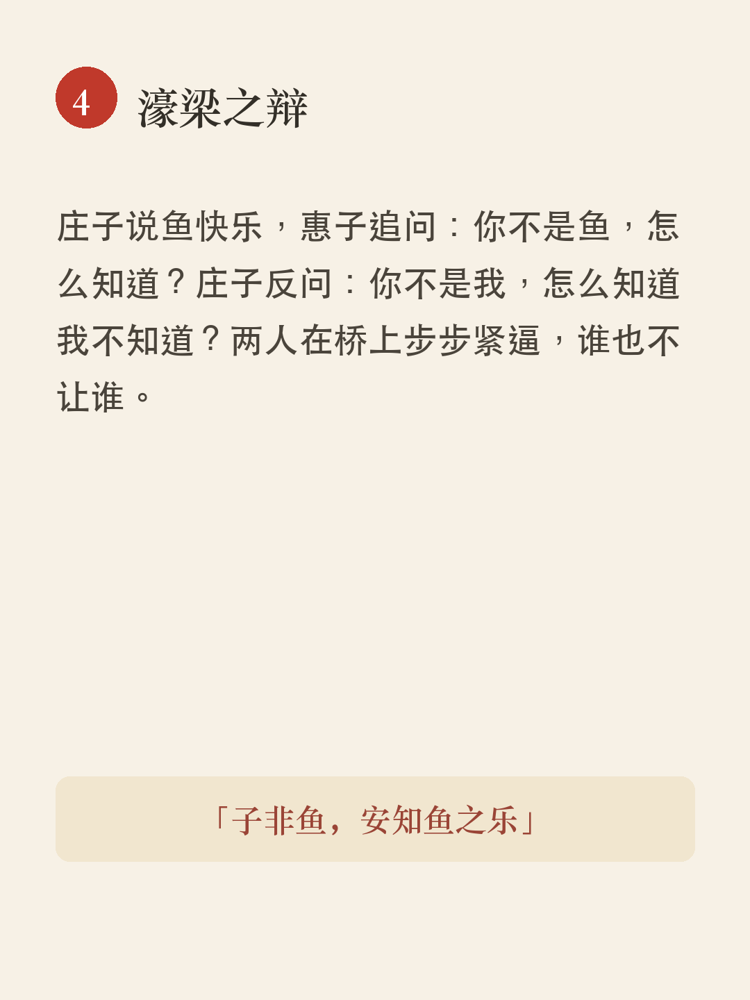
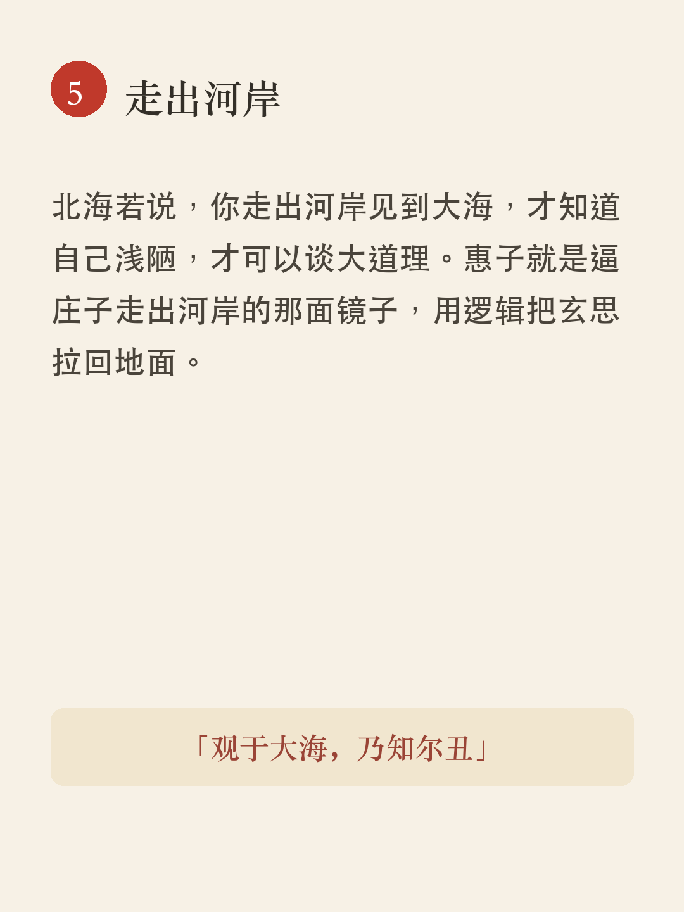
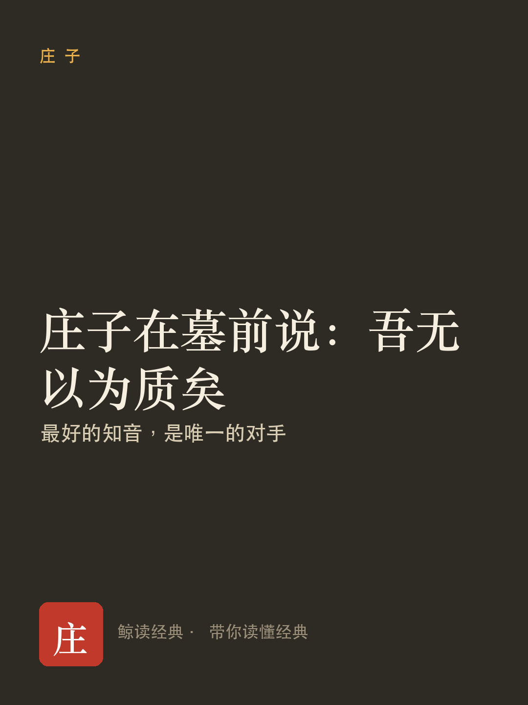
📄 配文·钩子（不剧透）
匠人能削尽鼻尖白泥而不伤毫发，却说再也无法表演第二次——因为那个站着不动的人死了。＋ 讲透版·自成一体（小红书图文）
庄子送葬经过惠子墓，没哭，只讲了个匠石运斤的故事：郢人鼻尖沾了薄如蝇翼的白垩，匠人抡斧削去，泥尽鼻安，而郢人立不失容。后来宋元君召匠人重演，匠人拒绝了——'臣之质死久矣'。质，就是那个敢站在斧下纹丝不动的对手。
惠子就是庄子的'质'。两人见面几乎都在抬杠：庄子论射箭，惠子说'可'；庄子论是非，惠子还说'可'。濠梁之上，庄子说鱼乐，惠子一句'子非鱼'就把他逼到逻辑死角。甚至惠子做梁相时，怕庄子夺位，搜捕他三天三夜，庄子拿鹓鶵与腐鼠的故事刺他——连防备和猜忌，都是一种认真对待。
庄子怀念的不是附和，而是那种'相拂以辞，相镇以声'的交锋。就像北海若对河伯说的：你走出河岸见到大海，才知道自己的浅陋，才可以跟你谈大道理。惠子用严密的逻辑和世俗的立场，一次次把庄子从玄想拉回地面，逼他把思想打磨得更锋利。惠子死后，庄子说'吾无与言之矣'——不是没人陪他说话，而是天下再没人能接住他的思想，再没人能逼他走向更深处。
所以孤独的反面不是陪伴，而是有人配得上跟你吵架。当你身边全是点头的人，你缺的可能不是朋友，而是一个'质'。
口播稿全文
大家好，我是鱼儿。
你身边可能全是点头称是的人，但你依然觉得没人懂你。我们总以为，最好的朋友就是永远赞同你的人。但庄子在朋友墓前的一番感叹，却给出了一个完全相反的答案：真正的知音，不是附和者，而是那个唯一配得上跟你吵架的对手。
庄子送葬时，经过惠子的墓地。他对随从讲了一个故事：有个郢地人，鼻尖上溅了一滴像苍蝇翅膀一样薄的白泥，他让匠人用斧子削掉。匠人挥动斧头呼呼作响，削尽了白泥，鼻子却一点没伤，那个郢地人站着，面不改色。后来宋元君听说这事，召见匠人让他再表演一次。匠人说，我确实曾经能削，但是，能跟我配合的那个对手，也就是我的“质”，早就死了。
讲完这个故事，庄子说了一句话：「自夫子之死也，吾无以为质矣，吾无与言之矣。」自从惠子死后，天下再也没有人可以做我的对手了，我再也没有可以说话的人了。
这里的“质”，就是对手、靶子。书里写道，「辩士无谈说之序则不乐」，善于辩论的人，如果没有了交锋的次序和对手，是不会快乐的。惠子就是庄子唯一的“质”。他们俩见面，几乎都在抬杠。庄子问，射箭如果不瞄准目标却射中了，就说他善于射箭，那天下人不都成了后羿吗？惠子说，可以。庄子又问，天下没有公认的正确，每个人都认为自己是对的，那天下人不都成了尧吗？惠子还是说，可以。惠子甚至自述，儒家、墨家等各家都在跟他辩论，大家「相拂以辞，相镇以声」，用言辞互相反驳，用声音互相压制，但他自称从来不认为自己有错。
这种针锋相对，甚至延伸到了现实的利益与戒备中。惠子在梁国做宰相时，庄子去看他。有人告诉惠子，庄子来是想取代你的相位。惠子听了大为恐慌，在国都里搜捕庄子三天三夜。庄子后来去见他，讲了一个故事：南方有一种鸟，名叫鹓鶵，不是梧桐不栖息，不是竹子的果实不吃，不是甘甜的泉水不喝。而一只猫头鹰抓到了一只腐烂的老鼠，看到鹓鶵飞过，仰头发出恐吓的叫声。庄子问惠子，现在你也是想用你的梁国来恐吓我吗？
哪怕在濠水桥上散步，两人也要辩论。庄子说，鱼游得从容，这是鱼的快乐。惠子立刻反驳，你不是鱼，怎么知道鱼的快乐？庄子说，你不是我，怎么知道我不知道鱼的快乐？惠子步步紧逼，我不是你，固然不知道你；你固然不是鱼，你不知道鱼的快乐，这就可以确定了。
庄子为什么如此怀念这个处处跟他作对、甚至防备他的人？就像书里，河伯见到大海后，北海若对他说，「今尔出于崖涘，观于大海，乃知尔丑，尔将可与语大理矣。」你走出了河岸，看到了大海，知道了自己的浅陋，这样才可以跟你谈论大道理。
真正的交流，从来不是在回音壁里听自己的声音，而是需要一面能照出自己局限的镜子。惠子就是庄子的这面镜子。他用严密的逻辑和世俗的立场，一次次把庄子从云端拉回地面，逼着庄子把那些玄妙的思想打磨得更锋利。惠子死后，庄子失去了这面镜子。那种无以为质的孤独，不是没人陪他说话的寂寞，而是天下再没有人能接住他的思想，再没有人能逼他走向更深处的荒凉。
所以，当你觉得身边全是赞同的声音，却依然感到孤独时，或许你缺的不是朋友，而是一个能与你相拂以辞的对手。
86新版映照scene公版✓ 判官过审鼓盆而歌：庄子为什么不哭？
🎬 面对不可挽回的失去，将悲痛放进四季轮转，明白生命来去便能找到平静。
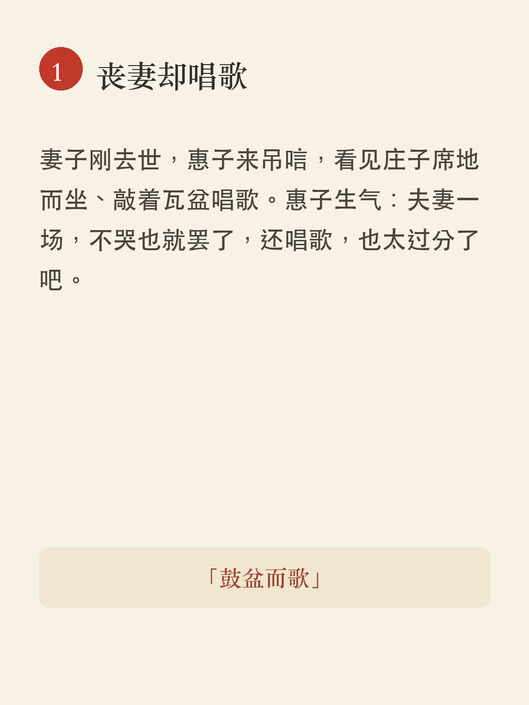
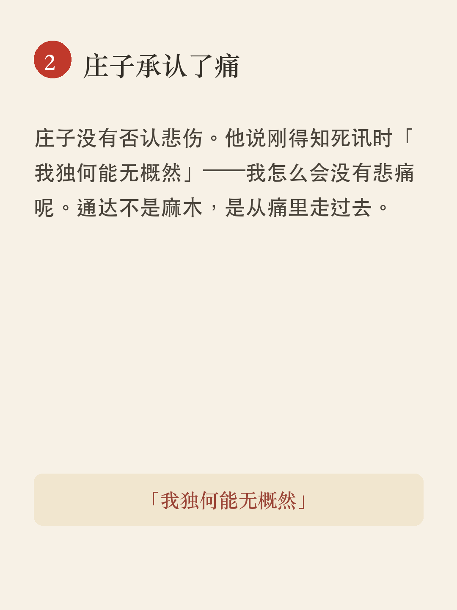
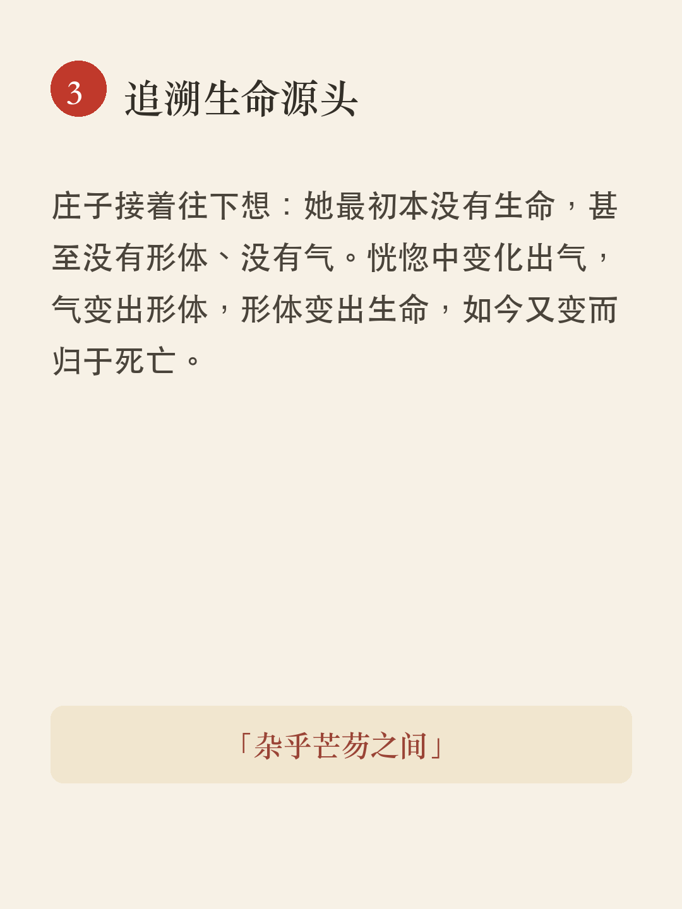
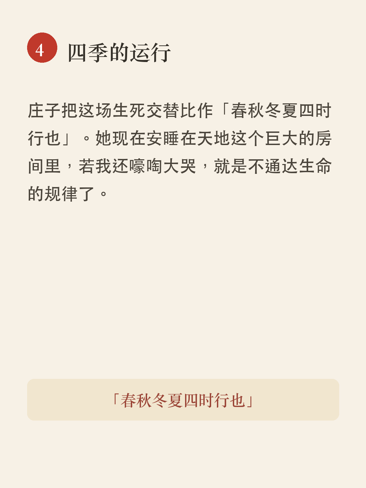
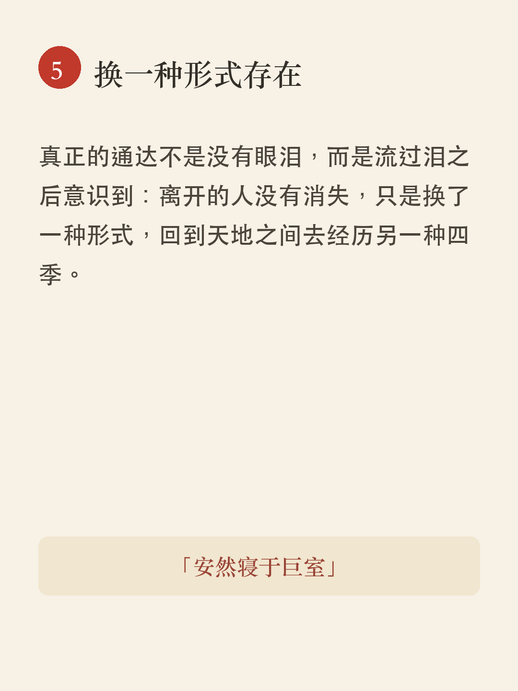
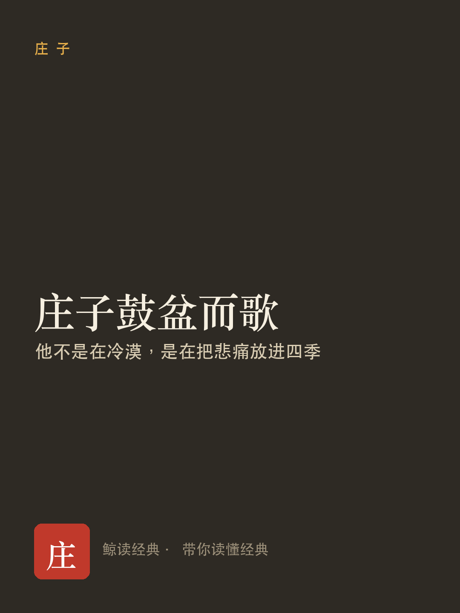
📄 配文·钩子（不剧透）
妻子刚去世，朋友来吊唁，却看到庄子敲着瓦盆在唱歌。＋ 讲透版·自成一体（小红书图文）
《庄子·至乐》里这个画面太反直觉了：庄子妻死，惠子吊之，庄子则方箕踞鼓盆而歌。
多数人第一反应是「这人太冷漠」。但原文里庄子自己说了一句特别关键的话——「我独何能无概然」。概然，就是感慨、悲痛的样子。他明明承认了那份痛。
那他怎么从痛里走出来的？他做的事是往回追溯：妻子最初「本无生」，不仅无生，「非徒无生也而本无形」，不仅无形，「非徒无形也而本无气」。是从「芒芴之间」——那种恍惚迷离的状态里，先有了气，气聚成形，形有了生，现在生又变而为死。
庄子把这一整条链条，归结为八个字：「春秋冬夏四时行也。」
这不是什么高深的哲学推演，而是一个朴素的类比——你不会因为冬天来了而嚎啕大哭，因为你知道春天还在后面。生死在庄子眼里，就是这种级别的寻常事。
所以他最后说，妻子现在「安然寝于巨室」——安睡在天地这间巨大的屋子里。如果他还噭噭然随而哭之，那就是「不通乎命」。
注意，庄子没有说「不该哭」。他说的是「止」——我停止了哭泣。这个「止」字很重要，它意味着悲伤是经历过的、被允许的，只是不让自己停留在里面。
我们面对失去的时候，痛苦往往来自一个预设：失去是终点，是被剥夺。但庄子提供了一个更大的坐标系——那个离开的人没有消失，只是换了一种存在的方式，回到天地之间。
这不是安慰人的漂亮话。这是一个人在真实的丧妻之痛里，用追问和思辨替自己找到的出路。允许自己起初悲痛，然后试着把那份难过，放进四季的运行里去。
口播稿全文
大家好，我是鱼儿。
当我们面对至亲的离去，或者生活中某种不可挽回的失去时，本能的反应通常是崩溃，觉得天塌了。但在《庄子》里，有一个极其反直觉的画面：妻子刚去世，朋友来吊唁，却看到庄子席地而坐，敲着瓦盆唱歌。
很多人以为这是看破红尘的冷漠，但其实，这不是麻木，而是他把巨大的悲痛放进了一年四季的轮转里。
朋友惠子看到这一幕，很不理解，甚至有点生气。他说，你们夫妻一场，她与你相伴多年，死了你不哭也就罢了，还敲着盆唱歌，这也太过分了吧。
庄子是怎么回答的？书里写道，庄子说，不是这样的。在她刚去世的时候，“我独何能无概然”，我怎么会没有悲痛之情呢。
注意这个细节，庄子没有否认自己的难过，他承认了那份真实的痛。但他接着往下想，去追溯生命的源头。
他说，在最初的时候，她本来就没有生命，不仅没有生命，连形体也没有，甚至连气都没有。在恍惚迷离的状态中，变化出了气，气变化出形体，形体变化出生命。现在，她又变化而走向了死亡。庄子把这种生与死的交替，看作是“春秋冬夏四时行也”，也就是四季的运行。
他说，现在她就像是安然地睡在天地这个巨大的房间里，如果我还在旁边嚎啕大哭，那就是我不通达生命的规律了，所以我停止了哭泣。
你发现没有，这不就是我们在面对生活中那些不可逆的失去时，特别需要的一种视角吗？
我们痛苦，往往是因为我们把失去看作是一个绝对的终点，是一个被剥夺的悲剧。但庄子提供了一个更宏大的坐标系。他把生死看作像昼夜交替、像四季轮转一样自然。
这并不意味着我们要压抑悲伤，或者强颜欢笑。庄子起初也是有悲痛的。真正的通达，不是没有眼泪，而是在流过泪之后，能意识到那个离开的人，或者那件失去的事，并没有真正消失，他们只是换了一种形式，回到了天地这个巨大的房间之中，去经历另一种四季的运行。
当我们再次面对那些无法挽回的告别时，或许可以想起那个敲着瓦盆的身影。允许自己有起初的悲痛，但也试着把这份难过，放进更长的岁月和四季的轮转里。因为明白生命的来去如同春夏秋冬，我们才能在巨大的失去面前，找到继续往前走的平静。
86新版洞见scene公版✓ 判官过审莊周夢蝶：誰夢誰的不可判，落在“物化”
🎬 被现实身份困住时，不再死死抓着自我不放，很多焦虑自然就散了。
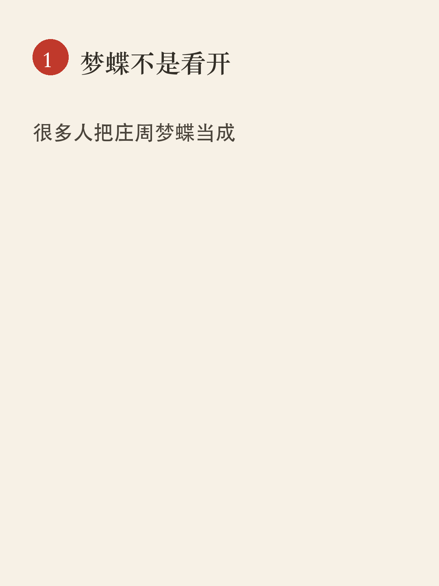
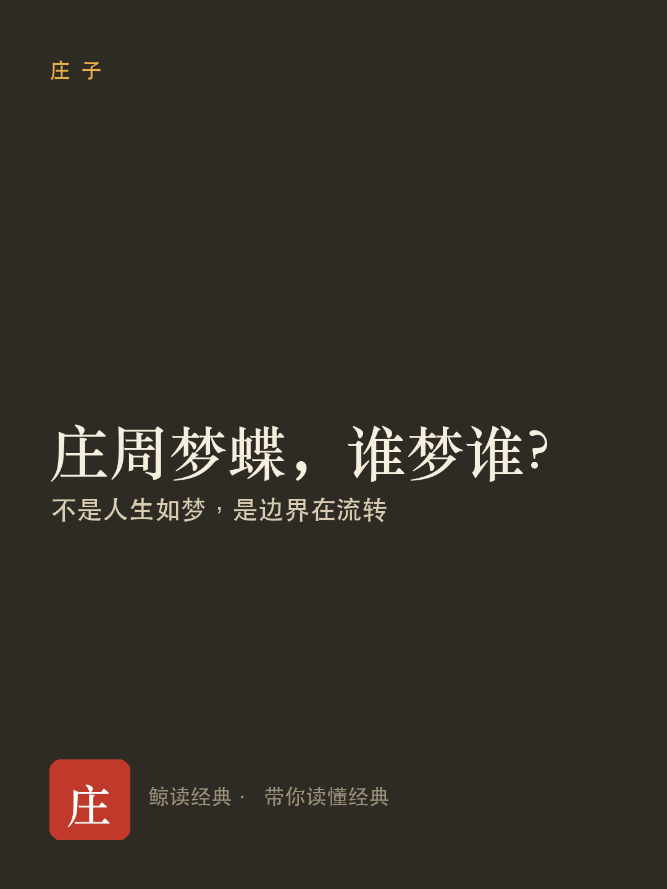
📄 配文·钩子（不剧透）
他醒来发现自己还是庄周，却问：是庄周梦见了蝴蝶，还是蝴蝶正在梦见庄周？＋ 讲透版·自成一体（小红书图文）
我们习惯把庄周梦蝶读成一句
口播稿全文
大家好，我是鱼儿。
我们总习惯在人和万物之间划一道死死的界限，我是我，世界是世界。但庄子用一个梦，把这道界限给拆了。很多人把庄周梦蝶当成一句人生如梦的感慨，觉得他是在劝人看开点。其实完全弄反了，庄子醒来后留下的那个问题，根本不是在劝人看开，而是在点破一个事实：我们和万物的分界，从来都不是刚性的。
书里写，庄子梦见自己变成了蝴蝶，“栩栩然胡蝶也”，飞舞得十分生动自在，完全忘了庄周这回事。突然醒来，发现自己还是那个躺在床上的庄周，“蘧蘧然周也”。这时候他没有庆幸自己梦醒了，而是抛出了一个无法判定的问题：究竟是庄周梦见自己变成了蝴蝶，还是蝴蝶正在梦见自己变成了庄周？
这个问题听起来像个绕口令，但庄子紧接着下了一个定论：“周与胡蝶，则必有分矣，此之谓物化。”庄周和蝴蝶，在形态上肯定是有区别的，但这种区别不是固定死的，它们之间可以相互转化、流转，书里管这种状态叫“物化”。也就是说，物与我之间的边界，是可以打通的。
为了说明这种边界的模糊，书里还提到，梦里喝酒的人，醒来可能在哭泣；梦里哭泣的人，醒来可能在打猎。人在做梦的时候，并不知道自己在做梦，甚至还会在梦里占卜梦的吉凶，直到醒了才知道那是梦。庄子借此指出，只有真正的大觉醒，才会知道人生其实是一场大梦，而普通人总以为自己醒着，还沾沾自喜地觉得什么都知道。
这种“谁梦谁”的不可判定，不是为了让你觉得生活虚无，而是让你看到，既然连梦和醒、庄周和蝴蝶的界限都可以流转，那我们在现实里死守的那些是非、得失、人我的对立，其实也是可以被消解的。
书里有一句大前提：“天地与我并生，而万物与我为一。”当我们不再把自我和外界看作是对立的，不再死死抓着“我”这个身份不放时，很多焦虑自然就散了。你不再是一个孤立的、时刻要和世界较劲的个体，而是可以和万物一起流转的一部分。
所以，当你觉得被现实的身份困住，觉得“我”和外界格格不入的时候，回头看那只栩栩然的蝴蝶。庄周和蝴蝶必有分，但在分界之外，是万物与我为一的广阔。
86新版故事scene公版✓ 判官过审浑沌之死：好心凿出的七窍
🎬 真正的善意是允许他人做自己，而非用自认正确的标准去傲慢地改造对方。
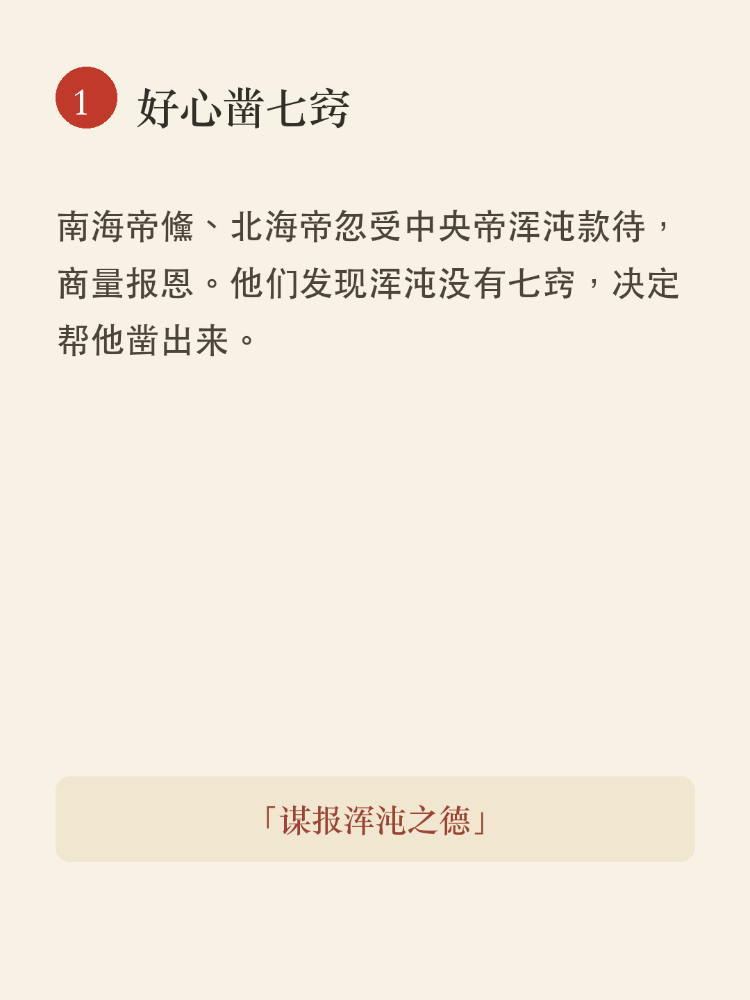
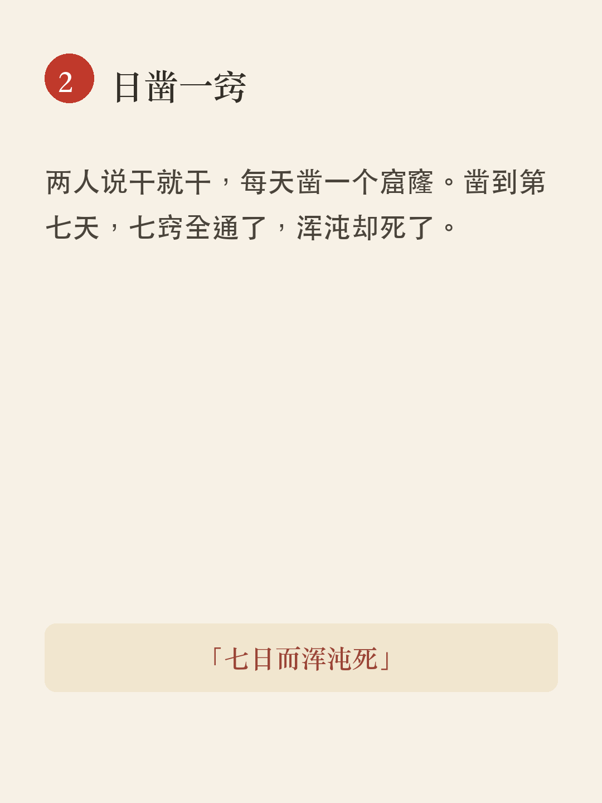
口播稿全文
大家好，我是鱼儿。
你明明是想帮一个人，把自认为最标准的路径全盘托出，替他规划好一切，结果对方不仅不领情，关系反而彻底崩了。这种好心办坏事的困境，庄子里有一个极其惨烈的寓言，把它的底层逻辑扒得干干净净。
南海的帝王叫儵，北海的帝王叫忽，中央的帝王叫浑沌。儵和忽经常在浑沌的地盘上碰面，浑沌对他们招待得非常周到。两个帝王觉得过意不去，商量着要报答浑沌的恩情，也就是“谋报浑沌之德”。怎么报呢？他们就对浑沌说：“人皆有七窍，以视听食息，此独无有，尝试凿之。”人都有七窍用来看、听、吃饭、呼吸，唯独浑沌没有，那就试着给他凿出来。
他们说干就干，“日凿一窍”，一天凿出一个窟窿。但结果是什么？书里写得极其冷酷：“七日而浑沌死。”凿到第七天，七窍全通了，浑沌却死了。
为什么好心会办成致命的坏事？因为儵和忽的善意，是建立在“人皆有七窍”这个标准化常识上的。他们用自己世界里的标准，去衡量另一个完全不同的生命形态。浑沌之所以是浑沌，就在于他没有七窍，他的生命力就在他那种未分化、未雕琢的完整状态里。儵和忽的这一凿，表面上是报恩，本质上却是一种以己度人、以常人的尺度衡量异类的强加改造。正如《应帝王》前文中，狂接舆批评道：“君人者以己出经，式义度人，是欺德也。”用自己的标准去度量、改造别人，这就是一种欺瞒与伤害。
其实《应帝王》这一篇的前文，早就点透了这一寓言的路数。真正高明的相处或者治理，在于“顺物自然而无容私焉”。顺应事物本来的样子，不掺杂自己主观的私意。至人的用心就像一面镜子，“不将不迎，应而不藏”，事物来了就照见，走了就不留，所以能“胜物而不伤”。而儵和忽，恰恰夹杂了私意，他们把自己的标准强加于人，最终没能“胜物而不伤”，而是“七日而浑沌死”，直接要了朋友的命。
所以，当你下次再忍不住想要替别人规划、替别人凿开七窍的时候，不妨停下来想一想：你是在帮他，还是在满足自己改造他人的控制欲？真正的善意，不是把别人变成你眼中的正常人，而是允许他做那个没有七窍、却活得很好的浑沌。
85新版冷知识scene公版✓ 判官过审舔痔疮得五辆车
🎬 用尊严换取的名利捷径看似赏赐，实则是拉你走向祭坛的囚车。
📄 配文·钩子（不剧透）
曹商带着一百辆车回来找庄子显摆，庄子只问了一句话——你为什么弄回这么多车？＋ 讲透版·自成一体（小红书图文）
曹商从秦国回来，带着一百辆车的赏赐，专门跑到穷街陋巷找庄子炫耀。他说自己能让大国君主赏识，这是本事。庄子没跟他争谁更有才华，而是讲了一个定价规则：秦王找人看病，挤毒疮的赏一辆车，舔痔疮的赏五辆车，「所治愈下，得车愈多」——治的部位越往下越脏，拿到的车就越多。然后庄子直接问他：你难道是去治他的痔疮了吗？怎么弄回这么多车？这句话的杀伤力不在羞辱，而在它揭示了一个精确的兑换公式：权力给你的赏赐越脏越重，说明你让渡的底线越低。曹商的一百辆车，不是才华的证明，是尊严的账单。庄子后来还用两个比方把这层凶险说透。一个是骊龙之珠——你从深渊里摸到宝珠，不是因为你有本事，只是龙恰好睡着了，龙一醒你连渣都不剩。一个是牺牛入庙——披着锦绣吃着好料的祭牛，被牵进大庙那一刻，想再做回没人管的小牛犊已经不可能了。今天在职场和名利场里，这套兑换公式依然精确：当你看到有人靠迎合拿了重金回来炫耀，不妨替他算一算，那一百辆车背后，到底咽下了多少脏东西。
口播稿全文
大家好，我是鱼儿。
在职场或名利场里，当你看到有人靠迎合上位、拿了重金回来炫耀时，怎么判断这到底是福是祸？庄子给出了一个极其辛辣的标准：权力给你的赏赐越脏，说明你付出的底线越低。
宋国有个叫曹商的人，出使秦国，带着一百辆车的赏赐回来找庄子显摆。他看着庄子住在穷街陋巷，靠织草鞋为生，饿得脖子干枯、脸色发黄，就得意地说，过这种苦日子是我的短处，而“一悟万乘之主而从车百乘者，商之所长也”，能让大国君主赏识并带着百辆车回来，这是我的长处。
面对这种炫耀，庄子没有去辩论谁的才华更高，而是讲了一个看病的故事。他说，秦王生病找医生，“破痈溃痤者得车一乘，舐痔者得车五乘”，能挤破毒疮的赏一辆车，能舔痔疮的赏五辆车，“所治愈下，得车愈多”，治的病越往下、越脏，得的车就越多。接着庄子直接问他：“子岂治其痔邪？何得车之多也？”你难道是去治他的痔疮了吗？怎么弄回这么多车？你赶紧走吧。
庄子这句冷嘲，不是在单纯骂人，而是戳破了挤进权力场换取富贵的底层逻辑。靠迎合换来的赏赐，本质上是让渡尊严，你得到的车马越多，意味着你咽下的脏东西越多。
为了把这种凶险说透，庄子还打过两个比方。有个人从宋王那里得了十辆车，跑来向庄子显摆。庄子说，这就像穷人从深渊里摸到了千金之珠，这珠子必定在骊龙的下巴底下，你能拿到只是因为龙睡着了，“使骊龙而寤”，龙一旦醒来，你连渣都不剩。宋王的凶猛远超骊龙，他一旦动怒，拿车的人就会变成粉末。
后来有人带着厚礼来聘请庄子，庄子又用了“牺牛入庙”的比喻来拒绝。他问使者，你见过祭祀用的牛吗？“衣以文绣，食以刍叔”，披着锦绣，吃着好料，可“及其牵而入于大庙，虽欲为孤犊，其可得乎”，等它被牵进大庙当祭品的时候，就算想再做回一头没人管的小牛犊，还能行吗？
这就是庄子从心底瞧不上这条攀附之路的原因。用尊严换来的百辆马车，看似是人生的捷径，实则是把你拉向大庙的囚车。当你看着别人靠迎合拿了重金回来炫耀时，不妨想想那深渊里睡着的骊龙，和那头披着锦绣走向祭坛的牛。
84新版人物thread公版✓ 判官过审庄子：泥里拖尾巴的人
🎬 生活窘迫时，看穿破鞋借粮却拒当国相者，如何在泥淖中保全自我而不疲惫。
📄 配文·钩子（不剧透）
写出九万里鲲鹏的那个人，穿着麻绳绑的破鞋去借米，不仅没借到，还被人打了一顿官腔。＋ 讲透版·自成一体（小红书图文）
庄子去借粮，监河侯说等收了税金借你三百金。庄子没发火，讲了条车辙里快干死的鲋鱼的故事——等你引来西江水，不如去干鱼铺找我。他把虚伪的推诿和自己的窘迫，赤裸裸摆在台面上，没有因为自己写出大道就掩饰狼狈。
楚王请他当国相，他拿鱼竿头也不回，只问：神龟愿死后被供在庙堂，还是活着在泥里拖尾巴？他选的是泥巴里那条尾巴。
穿破衣见魏王，魏王问他怎么这么疲惫。庄子纠正了一个字：我是「贫穷」，不是「疲惫」。衣服破鞋穿孔是贫穷，读书人有道不能推行才叫疲惫。他不把时代的病归结为自己的无能。
庄子没拿九万里的鲲鹏来麻痹自己。真正的逍遥不是飞上去逃避人间，而是在干涸的车辙里、在破鞋粗布衣中，依然能清醒辨认自己，不被世俗的评判标准拖入真正的疲惫。
口播稿全文
大家好，我是鱼儿。
写出九万里鲲鹏的那个人，现实中却家里断粮，穿着用麻绳绑着的破鞋去借米，不仅没借到，还被人打官腔。当你觉得生活窘迫、理想被现实按在地上摩擦时，看看庄子是怎么在泥潭里保全自己的。
书里写道，庄周家贫，去向监河侯借粮。监河侯打官腔说，等我收了封地的税金，借你三百金。庄子当场讲了一个故事：路上车辙里有条快干死的鲋鱼求斗升之水活命，那人却说要去引西江之水来救它。鲋鱼气愤地说，等你引来西江水，不如早点去干鱼铺里找我。庄子把这种虚伪的推诿和现实的窘迫，赤裸裸地摆在台面上。他没有因为自己是写出大道的人，就掩饰自己快饿死的狼狈。
他为什么不去当官摆脱这种狼狈？楚王派大夫去濮水边请他出任国相，说愿把国家托付给他。庄子拿着鱼竿头也不回，问了一个问题：楚国有一只神龟，死了三千年，被大王用锦缎包着藏在庙堂之上。这只龟，是宁愿死去留下骨骸享受尊贵，还是宁愿活着在泥水里拖着尾巴爬行？大夫说，宁愿活着在泥水里拖尾巴。庄子说，走吧，我也要在泥水里拖着尾巴。他选的不是高高在上的庙堂，而是真实的、哪怕沾满泥巴的生存。
这种选择是有代价的。他穿着打补丁的粗布衣服，用麻绳绑着破鞋去见魏王。魏王问他，先生怎么这么疲惫狼狈？庄子回答，我是贫穷，不是疲惫。读书人有道德却不能推行，那叫疲惫；衣服破旧鞋子穿孔，这只是贫穷，是因为没遇到好时代。他把在荆棘丛中战战兢兢的猿猴，比作身处昏君乱相之间的自己。他清醒地知道自己为何落魄，绝不把时代的病归结为自己的无能。
庄子没有用九万里的鲲鹏来麻痹自己，也没有用精神胜利法去掩盖现实的困顿。书里说，世间的爵禄不足以动摇他，刑罚与耻辱也不足以让他觉得屈辱。他守住的是不以身殉名，不拿真实的生命去殉葬虚名。当我们也在现实的泥淖里挣扎，觉得理想遥不可及时，或许可以想想那个在泥里拖着尾巴的人。真正的逍遥，不是飞上九万里逃避人间，而是在干涸的车辙里、在破鞋与粗布衣中，依然能清醒地辨认出自己，不被世俗的评判标准拖入真正的疲惫。
84新版故事scene公版✓ 判官过审庄子：相濡以沫，不如相忘于江湖
🎬 绝境中的苦苦支撑只是互相消耗，真正的深情是放手让彼此回到广阔江湖。
📄 配文·钩子（不剧透）
两条鱼在干涸的泉水里互吐唾沫，庄子说这是一种走投无路。＋ 讲透版·自成一体（小红书图文）
我们习惯把「相濡以沫」当作感情的最高赞美，但庄子写这个画面的第一句话是「泉涸」——泉水干了。两条鱼被困在陆地上，互相吐湿气、用唾沫润湿对方，代价极大，只为勉强活着。庄子看的不是感动，是前提：生存环境已经崩溃了。
所以他说「不如相忘于江湖」。不是薄情，是判断——与其在干涸的泥坑里苦苦支撑，不如回到水波浩渺的江河湖海，各自安好，彼此不需要拯救。
这个逻辑他一路推到人的处境。借孔子的口说「鱼相忘乎江湖，人相忘乎道术」，鱼在水里就安定，人在规律中就不必强求。书里还写了子桑，淋了十天雨饿得将死，追问是父母让我穷的吗、是天地让我穷的吗，最后归结为一个字：命。庄子没有把这个字磨成鸡汤，他让你看清——人力有穷尽，承认这一点，才谈得上放下。
所以「相忘」从来不是轻飘飘的洒脱，它的底色是承认泉涸时的无力。真正的深情不是在泥坑里互相消耗，而是努力让彼此回到广阔的江湖。
口播稿全文
大家好，我是鱼儿。
我们总把相濡以沫当成感情里极高的赞美，但在庄子眼里，这其实是一种走投无路的悲剧。
书里写了一个很具体的画面：泉水干涸了，两条鱼被困在陆地上。它们互相吐着湿气，用唾沫湿润对方的身体。这个画面看着很感人，但庄子说，这不如它们当初在江河湖海里游动时，互相忘记对方的存在。
为什么？因为相濡以沫的前提，是泉涸，也就是生存环境已经崩溃了。它们是在用极大的代价，勉强维持着生存。庄子看透了这种困境里的互相消耗，所以他提出，与其在干涸的泥坑里苦苦支撑，不如回到广阔的江湖，各自安好。
这不只是一种感情观，而是庄子对人生处境的根本判断。书里接着把这种相忘扩展到价值判断上。他说，与其去赞美尧的善、指责桀的恶，不如把这两极的评价都忘掉，融入到自然的大道中去。
书里还借孔子的口，把鱼的处境对应到了人身上。孔子说，鱼得其水；人如果在道里，就能「无事而生定」。所以结论是：「鱼相忘乎江湖，人相忘乎道术」——这里的“道术”指成法与术数，不是“道”本身。
什么是无事而生定？就是不去强求、不去苦撑，顺应事物本来的规律。书里有一句话说「人之有所不得与，皆物之情也」，意思是人力无法干预的部分，就是万物本来的实情。承认这一点，不去和无法改变的现实死磕，才是相忘的底色。
这种相忘，绝不是轻飘飘的洒脱，它的前提是承认泉涸时的无力感。就像书里写的子桑，淋了十天雨，饿得快要死了。他弹琴唱歌，问是父母让我这么穷的吗？是天地让我这么穷的吗？最后他得出结论，是命。这种面对绝境的无奈，庄子没有把它磨平成正能量，而是让你看清人力有穷尽时的真实处境。在无法改变的困境面前，放下执念，才可称作「相忘以生」。
当我们再看到相濡以沫这个词，或许不该只看到感动，而应看到背后的干涸。真正的深情与智慧，不是在泥坑里互相消耗、苦苦支撑，而是努力让彼此回到广阔的江湖。在那里，水波浩渺，万物各安其所，哪怕相忘，也是最好的成全。
84新版洞见scene公版✓ 判官过审庄子《天下》：各执一端，百家不合——“道术将为天下裂”
🎬 知识越细分，人越易困于局部正确沾沾自喜，从而失去整体的智慧。
📄 配文·钩子（不剧透）
庄子在全书最后一篇写下一个词：裂。他看见百家各自捧着一块碎片，却再没有人能拼回天地之纯——而两千年后的我们，正活在这条裂缝里。＋ 讲透版·自成一体（小红书图文）
庄子在《天下》篇里用了四个字形容一种普遍状态：「得一察焉以自好」。每个人只要看到一点点道理，就觉得自己掌握了真理。他拿人的感官打比方——耳朵能听、眼睛能看、鼻子能闻、嘴巴能尝，各自有本事，却互不相通。诸子百家也是这样，各有所长，各有所用，但都是「一曲之士」，偏而不全。
更残酷的例子他给了墨家。相里勤的弟子、南方墨者苦获、已齿，都在读同一部《墨经》，却互相骂对方是「别墨」——不是真正的墨家。他们用「坚白同异」这些逻辑命题辩论攻击，都尊奉巨子为圣人，争着继承他的位置，到庄子写书时仍没有定论。一个因兼爱非攻而聚的学派，最终在概念之争和权位之夺中分崩离析。
庄子因此写下那句预判：「后世之学者，不幸不见天地之纯，古人之大体，道术将为天下裂。」裂，不只是学派之间的事——同一学派内部也在裂，同一个人在不同议题上也把自己裂成几瓣。
今天信息越多、专业越细，我们越习惯用耳朵的功能嘲笑眼睛的局限。道术裂开或许不可逆，但至少在捧起碎片时，我们可以记得它曾属于一个完整的大体。
口播稿全文
大家好，我是鱼儿。
当知识越来越细分，每个人都在自己的专业里自以为是时，整体的智慧反而消失了。庄子在书的最后一篇，留下了一句两千年的预言：“道术将为天下裂”。
庄子观察到，天下大乱的时候，圣贤的标准不清晰，道德的标准也不统一。这时，书里写道：“多得一察焉以自好”。意思是，每个人只要稍微看到一点道理，就沾沾自喜，觉得自己掌握了真理。
他打了个比方，这就像人的耳朵、眼睛、鼻子、嘴巴，各自都有擅长的功能，但互不相通。诸子百家的学说也是这样，各有长处，也各有用处。但问题在于，他们“不该不遍”，也就是偏而不全，只是“一曲之士”。
当每个人都抱着自己那一小块碎片，去评判天地之美、剖析万物之理时，很少有人能看见天地的完整之美。结果就是，真正的大道暗而不明，天下人各自按照自己的欲望和偏见去建立标准。庄子感叹，百家这样走下去就回不来了，也必然无法融合。于是他写下了那句沉重的预判：“后世之学者，不幸不见天地之纯，古人之大体，道术将为天下裂。”
这种裂不仅发生在学派之间，同一学派内部也会分裂。书里写到墨家，相里勤的弟子、南方的墨者苦获、已齿这些人，都在诵读《墨经》，但彼此的理解却大相径庭，互相指责对方是“别墨”。他们用坚白同异这些辩论互相攻击，都尊奉巨子为圣人，希望能继承他的位置，直到书里记录的时候，这种分歧依然没有决断。原本为了兼爱非攻而聚集的人，最终在概念的争论和位置的争夺中分崩离析。
这正是庄子对知识与价值被拆碎后的警惕。我们今天也处在这样一个道术为天下裂的处境里。信息越来越多，专业越来越细，每个人都在自己的认知壁垒里“得一察焉以自好”。我们拥有了无数具体的知识和技术，却越来越难看到“天地之纯”和“古人之大体”。我们习惯了用局部的正确去否定整体的复杂性，用耳朵的功能去嘲笑眼睛的局限。
今本《庄子》将这篇置于全书的最后，像是在做一个漫长的回望。他看到了百家往而不反的必然，也留下了对天地之纯的眷恋。道术裂开之后，碎片散落人间，这或许是不可逆的进程。但至少在捧起这些碎片时，我们能记得，它们曾经属于一个完整的大体。
84新版映照scene公版✓ 判官过审骷髅说：死了比当王还快活
🎬 当活着沦为扛事的劳役，庄子笔下拒不复活的骷髅能教你卸下生人之累。
📄 配文·钩子（不剧透）
庄子路遇一具骷髅，问它愿不愿意重新活过来，骷髅的回答让他无法反驳。＋ 讲透版·自成一体（小红书图文）
庄子在去楚国的路上捡到一具骷髅，拿马鞭敲着问了一串：你是犯了事被杀的？还是饿死冻死的？还是寿终正寝的？问完就拿它当枕头睡了。
半夜骷髅托梦，说了一句话：「死，无君于上，无臣于下，亦无四时之事，从然以天地为春秋，虽南面王乐不能过也。」——死了之后没有上下级，没有KPI，没有四季要操心的农活，拿天地的寿命当自己的寿命，这快乐连面南称王都比不上。
庄子不信，说那我请司命之神把你的骨肉肌肤还给你，送你回父母妻子身边，你干不干？
骷髅的回答几乎是脱口而出的：我怎么能扔掉南面称王的快乐，再跑回人间受苦？
注意，骷髅拒绝的不是「生命」，而是「人间之劳」。在庄子的语境里，活着这件事被一套系统绑架了——富人苦身疾作攒钱，贵人夜以继日算计得失，连长寿的人都长久地泡在忧愁里。骷髅用一句「皆生人之累也」把这套系统拆穿了：你拼命追逐的东西，恰恰是让你不得自由的负重。
这跟庄子妻子去世时他「鼓盆而歌」的逻辑是一根藤上的。惠子骂他太过分，庄子说：她最初本来没有生命，没有形体，甚至没有气，忽然气聚成形、形变有了命，现在又散回去了，跟春秋冬夏轮转一样。她现在「偃然寝于巨室」——安安稳稳睡在天地这间大屋子里，我要是还嗷嗷哭，那就是不通达命。
庄子不是在赞美死亡。他做的事，是把「生」从必须死死攥住的私有财产，还原成气聚气散的一段过程。当这个尺度立起来，那些附着在生命上的东西——对上级脸色的恐惧、对房贷的焦虑、对富贵得失的执念——就失去了捆住你的力量。
每天一睁眼，打卡、汇报、维系关系的劳役还是会准时来。但你至少可以在扛事的间隙问自己一句：此刻压在我身上的，哪些是真正的责任，哪些只是「生人之累」？认出那个区别，就是庄子留给现代人最小的、但最实在的自由。
口播稿全文
大家好，我是鱼儿。
每天一睁眼，打卡、汇报、还房贷、维系关系，我们总觉得活着就是一场不断扛事的劳役。如果现在有个机会，让你彻底卸下这一切，甚至把当大王的快乐都给你，你愿意回到这种劳役里吗？《庄子》里有一具骷髅，面对这个问题，给出了一个极其决绝的答案。
庄子去楚国的路上，看见一具空骷髅，形状还在。他拿马鞭敲了敲，问了一堆问题：你是贪生怕死违背常理弄成这样的？还是国家灭亡被斧钺诛杀的？还是做了坏事愧对父母妻子？还是挨冻受饿？或者是寿命到了，自然死的？
问完，庄子把骷髅拿过来当枕头就睡着了。
半夜，骷髅托梦给庄子，说：你白天说话像个辩士，但你说的这些，全都是活人的累赘，死了就没有这些了。你想听听死后的状态吗？
庄子说想听。
骷髅说：死了之后，上面没有君主，下面没有臣子，也没有四季要操劳的农事，从容地把天地的寿命当作自己的寿命，这种快乐，就算是面南称王的快乐也比不上。
庄子不信，就说：我让司命之神恢复你的形体，给你骨肉肌肤，把你送回父母妻子和乡亲朋友身边，你愿意吗？
骷髅听了，连忙拒绝，说：我怎么能放弃面南称王的快乐，再去受人间的劳苦呢！
你发现没？骷髅拒绝的不是生命本身，而是“人间之劳”。
在骷髅眼里，活着的本质就是累：富人要苦身疾作地积累财富，贵人要夜以继日地思虑得失，就算是长寿的人，也是长久地伴随着忧愁。我们现代人何尝不是如此？为了世俗看重的富贵与长寿，为了身安厚味美服，我们把自己绑在了一套停不下来的系统里。得不到就大忧大惧，得到了又害怕失去。骷髅那句“皆生人之累也”，戳破的正是我们用一生去追逐、却常常被其反噬的生存状态。
既然生是一场劳役，那死是什么？是惩罚，还是解脱？
庄子的妻子去世时，惠子去吊唁，看到庄子正岔开腿坐着，敲着瓦盆唱歌。惠子觉得这太过分了。
庄子解释说，妻子刚死时，我怎么会不感慨悲伤？但推究她的本源，本来就没有生命，没有形体，甚至没有气。在恍惚之中，气聚成形，形变有了生命，现在又变回了死亡。这就像春秋冬夏四季运行一样。她现在安然地躺在天地这个巨大的房间里，如果我还要嗷嗷地跟着哭，那就是不通达命运的道理了，所以我停止了哭泣。
从骷髅放弃南面称王的快乐，到妻子死后的鼓盆而歌，庄子不是在赞美死亡，而是在重新丈量生死的尺度。
他把生死看作四季的交替，看作气聚气散的自然过程。当我们不再把生看作必须死死攥住的私有财产，不再把死看作失去一切的深渊，那些附着在生命之上的人间之劳——对上下级关系的恐惧、对四时之事的焦虑、对富贵得失的执念，也就失去了捆绑我们的力量。
每天一睁眼，那些打卡、汇报、维系关系的劳役依然会准时到来。但当你明白生死不过是春秋冬夏四时行也，你或许就能在扛事的间隙，给自己留出一个“偃然寝于巨室”的喘息之机，把那些本不属于你的“生人之累”，轻轻还给天地。
83新版故事scene公版✓ 判官过审白驹过隙：人生就在一瞬间
🎬 人每月真正大笑不过四五天，别将命耗于执念，事来应对事过不守。
📄 配文·钩子（不剧透）
庄子用一匹掠过门缝的白马，点破了人生最短的真相。＋ 讲透版·自成一体（小红书图文）
我们总以为来日方长，能为一个道理、一个人内耗好几年。但庄子在书里写下“若白驹之过郤，忽然而已”——人生就像白马掠过门缝，一闪就没了。这不是让你珍惜光阴的鸡汤，而是逼你做一个残酷的减法：既然生命须臾，你到底要把命耗在什么事上？书里说“虽有寿夭，相去几何”，寿命长短不过须臾，哪里够用来判定尧桀的是非？连圣君暴君的大道理都不值得用一生去定断，更何况我们生活里那些鸡毛蒜皮的输赢、别人的一句评价、一次没争回来的面子？“明见无值，辩不若默”，看透了就不觉得有什么值得争的。庄子给出的活法是“遭之而不违，过之而不守”——事情来了不违逆，事情过去不死守。我们大多数人的痛苦恰恰在于违与守：还没来就焦虑，过去了还懊悔，死死抓着已经流逝的东西不放。生死在庄子看来只是气的聚散，“已化而生，又化而死”。既然连生死都是自然变化，中间那些得失更不值得用须臾生命去死磕。当你再为某件事整夜失眠，或在一段关系里反复纠结时，想想那匹掠过门缝的白马——一辈子真的不过是“忽然而已”。
口播稿全文
大家好，我是鱼儿。
我们总以为来日方长，为了一个争不出结果的道理，或者一个放不下的人，我们能为此内耗好几年。但庄子在书里点破了一个极其冷酷的真相：人生天地之间，“若白驹之过郤，忽然而已”。就像一匹白马掠过门缝，一闪就没了。
庄子用这个极短的画面，不是为了灌鸡汤让你珍惜光阴，而是逼你做一个残酷的减法：既然生命只是须臾之间，你到底要把命耗在什么事上？
书里写道，“虽有寿夭，相去几何？须臾之说也，奚足以为尧桀之是非！”意思是，寿命长短不过须臾，这么点时间，哪里够用来判定尧和桀谁对谁错？庄子这是在质疑：用须臾之短的生命，去死磕大是大非，真的有意义吗？
尧是圣君，桀是暴君，争论他们的是非，代表着世间极大的道理之争。但庄子说，连这种级别的是非都不足以用须臾的生命去定断，更何况我们生活里那些鸡毛蒜皮的输赢、别人的一句评价、一次没争回来的面子？书里给出的态度是，“明见无值，辩不若默”。看透了就不觉得有什么值得争的，争辩不如沉默。
面对这忽然而已的一生，庄子给出的活法不是去打鸡血，也不是彻底躺平，而是两句：“圣人遭之而不违，过之而不守”。
事情来了，我不违逆，去应对；事情过去了，我不死守，不执着。适时地回应它，这就是顺应自然。
这其实很难。我们大多数人的痛苦，恰恰在于违与守。还没来的时候焦虑，过去之后懊悔，死死抓着那些已经流逝的东西不放。生死在庄子看来，只是气的聚散，是“已化而生，又化而死”。既然连生死都是一种自然的变化，中间那些得失，就更不值得用这须臾的生命去死磕了。
所以，当你再为了某件事整夜失眠，或者在一段关系里反复纠结时，想想那匹掠过门缝的白马。一辈子真的不过是“忽然而已”，把那些不值得的争论放下，做到“遭之而不违，过之而不守”，不执着于过去，不困于争辩，这才是庄子教给我们的，真正清醒的活法。
83新版洞见thread公版✓ 判官过审道在屎尿里
🎬 有人追问庄子：道到底在哪？庄子一路往下指——在蚂蚁，在杂草，在碎瓦，最后在屎尿里。
📄 配文·钩子（不剧透）
东郭子非要庄子说清道在哪里，庄子一路往下指，最后指到了屎尿里——东郭子彻底不说话了。＋ 讲透版·自成一体（小红书图文）
《庄子·知北游》里，东郭子问庄子道在哪，庄子先说蝼蚁、杂草、瓦片，东郭子每听一次都觉得更离谱，直到庄子说出
口播稿全文
大家好，我是鱼儿。
我们总觉得，深刻的道理一定藏在名山大川里，藏在深奥的古籍里，或者某种高高在上的境界里。但《庄子》里有一个极其反常识的回答：有人追问深奥的“道”到底在哪，答案是一路往下指，最后指到了屎尿里。
书里写道，东郭子问庄子，所谓的道，究竟在哪里？庄子说，无所不在。
东郭子觉得太抽象，非要庄子给个具体的指向。
庄子说，在蝼蚁身上。
东郭子嫌太低级，问怎么这么低下？
庄子接着往下指：在杂草里，在碎瓦片里。
东郭子越听越觉得离谱，庄子最后给出了一个极其粗鄙的答案：在屎溺里，也就是屎尿里。
听到这，东郭子彻底不说话了。
庄子看他愣住了，解释说，你问问题的方式，本来就没有触及到本质。他打了一个比方，就像在市上有人会踩猪腿来判断猪的肥瘦；看猪腿这种不起眼的地方，反而更能看清这头猪真实的膘情。书里管这叫“每下愈况”。
庄子想说的是，你不要执着于到某个高大上的地方寻找真理，因为“无乎逃物”，道没有逃离任何事物。越是那些被我们嫌弃的、低微的、甚至肮脏的日常角落，越能毫无伪装地显现出事物运转的真实规律。
在庄子看来，天地有大美而不言，四时有明法而不议，万物有成理而不说。真正的规律，从来不会自己跳出来发表演讲。通天下一气耳，万物在本质上是一样的。那些被我们赞美为神奇的和被我们厌恶为臭腐的，其实都在同一个循环里互相转化。
所以，真正通达的人，不会把智慧当成一种需要刻意端着的姿态。书里提到，知者不言，言者不知，故圣人行不言之教。道是没有痕迹、没有边界、无门无房，四达之皇皇也。
这其实给了我们一个很实在的判断标准：当你试图去理解一个人、一件事，或者寻找解决生活困境的方法时，不要只盯着那些光鲜亮丽的总结、高高在上的大词。
去看看那些琐碎、不起眼、甚至让你觉得有些难堪的日常细节。一个人真正的品性，往往不在他高谈阔论时，而在他面对微小、不堪的处境时的下意识反应里。一件事真正的症结，往往不在宏大的战略规划里，而在具体的执行细节里。
我们总想去高处寻找答案，但庄子把视线拉回了地面。深刻的智慧不在云端，就在你每天踩着的泥土里，在那些你试图绕开的、粗糙而真实的日常里。
82新版洞见thread公版✓ 判官过审《庄子》为什么用故事讲道理
🎬 一本满纸寓言的书，藏着一段对自己的交代：它为什么非得用故事，而不肯用道理，去讲那个道。
📄 配文·钩子（不剧透）
齐桓公在堂上读圣人之书，工匠轮扁放下斧头走上去说：您读的全是糟粕。桓公要他给个说法，不然就处死。＋ 讲透版·自成一体（小红书图文）
我们习惯觉得讲道理就该条理清晰、一二三四列出来。但《庄子》满篇荒诞故事、奇怪对话，几乎不肯正儿八经讲一句道理。这不是庄子讲不清楚，而是他在刻意防备一件事：道理讲得太清楚，反而会骗人。
书里有个做车轮的工匠叫轮扁。齐桓公在堂上读圣人的书，轮扁放下工具走上去说，您读的都是古人的糟粕。桓公让他给个说法，不然处死。轮扁说，我砍削车轮，慢了松滑不牢固，快了涩滞砍不进去。不慢不快、得心应手的那个分寸，我说不出来，也没法教给儿子，所以七十岁了还在亲手做轮。古人那些说不出来的真东西，早就跟着他们死了，您现在读的可不就是糟粕？
这就是庄子对语言的根本警惕。真正核心的体验和智慧，口不能言。一旦用语言定义出来、写成文字，就被固定了，也就失真了。所以东郭子追问「道在哪里」，庄子不给哲学定义，说道在蝼蚁、在杂草、在砖瓦、在屎尿——用画面感极强、甚至让人不适的具体事物，直面你的成见，打破对道的抽象幻想。
那既然语言有局限，为什么还要写十几万字？庄子自己给了答案：捕鱼的竹篓是为了抓鱼，抓到了就可以忘掉竹篓；语言是为了传达心意，领会了就可以忘掉语言。
「得意而忘言」——他写那么多光怪陆离的故事，不是让你记住故事，更不是让你当教条背诵。故事只是指月的手指、捕鱼的竹篓。道理是死的，生命是活的。真正的智慧不在被总结好的金句里，而在你放下书本、面对具体生活时，那种得之于手而应于心的默契里。
口播稿全文
大家好，我是鱼儿。
我们平时总觉得，讲道理就该条理清晰、一二三四列出来。但《庄子》这本书，满篇都是荒诞的故事、奇怪的对话，几乎不肯正儿八经地讲一句道理。这不是庄子讲不清楚，而是他刻意在防备一件事：把道理讲得太清楚，反而会骗你。
书里有个做车轮的工匠叫轮扁。齐桓公在堂上读圣人的书，轮扁放下手里的工具走上去说，您读的都是古人的糟粕。桓公让他给个说法，不然就处死他。轮扁说，我砍削车轮，慢了松滑不牢固，快了涩滞砍不进去。不慢不快，得心应手，这其中的分寸，我说不出来，也没法教给我的儿子，所以我七十岁了还在做车轮。古人那些说不出来的真东西，早就跟着他们死了，您现在读的，可不就是糟粕吗？
这就是《庄子》对语言的警惕。他认为，真正核心的体验和智慧，是口不能言的。一旦你用语言把它定义出来、写成文字，它就被固定了，也就失真了。书里明明白白地写着，“道不可闻，闻而非也；道不可见，见而非也；道不可言，言而非也”。真正懂的人不说，说的人其实不懂。
所以，当东郭子追问庄子，道到底在哪里时，庄子没有给出一个高深的哲学定义，而是说在蝼蚁里，在杂草里，在砖瓦里，甚至在屎尿里。东郭子听完沉默了。庄子就是用这些画面感很强、甚至让人不适的具体事物，去直面你的成见，打破你对道的抽象幻想。
那既然语言有局限，为什么还要写这十几万字呢？《庄子》自己给出了答案：捕鱼的竹篓是为了抓鱼，抓到了鱼就可以忘掉竹篓；语言是为了传达心意，领会了心意就可以忘掉语言。这就是书里说的，得意而忘言。他写那么多光怪陆离的故事，不是为了让你记住故事本身，更不是让你把故事当成教条去背诵。故事只是一个指月的手指，一个捕鱼的竹篓。
所以，回到一开始的问题，《庄子》为什么非要用故事来讲道理？因为道理是死的，而生命是活的。当你试图用一套清晰的逻辑去框住生活时，你得到的往往只是古人留下的糟粕。真正的智慧，不在那些被总结好的金句里，而在你放下书本、面对具体生活时，那种得之于手而应于心的默契里。
82新版故事scene公版✓ 判官过审螳臂当车：不自量力的勇气
🎬 面对强势不讲理的人，用你的正确去硬顶，只会衬托对方无能而自取其祸。
📄 配文·钩子（不剧透）
蘧伯玉没讲坚持真理的大道理，只让他去看一只虫子。＋ 讲透版·自成一体（小红书图文）
颜阖要教卫灵公太子，太子'其德天杀'，管他送命、不管误国。他去问蘧伯玉，蘧伯玉没讲大道理，只讲了螳螂——'不知其不堪其力也，是其才之美者也'。这八个字钉死了一个真相：螳螂不是输在力量小，而是输在'是其才之美'，它太看重自己那副举臂的姿态了。庄子真正警告的不是弱者别反抗，而是别把'我是对的'当成护身符。你越正确、越专业，在那个听不进劝的人面前，就越是在用你的'有'照出他的'无'，这叫'以人恶有其美也'。蘧伯玉后来举养虎、爱马——喂活物激虎怒，拍蚊时机不对马咬断缰绳。初衷好、道理对，在不可控的力量面前不懂顺应，'意有所至而爱有所亡'。所以下次遇到那个手握重权又听不进劝的人，先收起才之美。承认不胜任不是懦弱，是在力量悬殊的现实里给自己留一条活路。
口播稿全文
大家好，我是鱼儿。
在职场或生活里，遇到一个根本听不进劝、又手握重权的人，你该不该拿着自己的专业和道理去硬顶？
很多人以为“螳臂当车”是在嘲笑不自量力，但在《庄子》里，这其实是一句极其沉重的处世警告：拿着自己的长处去硬顶强权，不是勇敢，而是自取其祸。
书里写道，颜阖要去给卫灵公的太子当老师。这个太子天性残暴，书里说他“其德天杀”。颜阖非常痛苦，去问蘧伯玉：如果我由着他性子来，就会危害国家；如果我用规矩去约束他，就会危及我自己的命。这位太子的聪明刚好能看出别人的错，却看不见自己哪里错。面对这种人，我该怎么办？
蘧伯玉没有给他讲坚持真理的大道理，而是给他讲了螳臂当车的故事。
蘧伯玉说，你见过螳螂吗？它愤怒地举起双臂，想要挡住碾过来的车轮，它根本不知道自己挡不住，还觉得自己这副姿态很英勇、很有能耐。书里的原话叫“不知其不堪其力也，是其才之美者也”。
蘧伯玉紧接着告诫颜阖：千万要警惕啊，一味夸耀自己的长处去触犯他，这就离死不远了。原话是“积伐而美者以犯之，几矣”。
为什么拿着自己的才之美去硬顶，反而会招祸？
因为当你面对一个强势且不讲理的人时，你越是展现自己的正确和专业，就越是在衬托他的无能。书里把这叫做“以人恶有其美也”，你的美好和正确，恰恰成了激怒他的催化剂。
蘧伯玉还举了养虎和爱马的例子。养虎的人不敢给老虎喂活物，怕激起它杀戮的怒气；爱马的人用精美的筐接马粪，可如果刚好有蚊虻叮咬马，人若拍打不得其时，马就会咬断缰绳、扯坏笼头。
你的初衷是好的，你的道理是对的，但在一股不可控的庞大力量面前，你的对如果不懂得顺应和隐藏，就会变成毁灭自己的利刃。这就是书里说的“意有所至而爱有所亡”。
在书中另一处的对话里，季彻评价别人的治国方略时，再次用到了这个比喻，说这就像螳螂举臂挡车，“则必不胜任矣”。
所以，《庄子》讲螳臂当车，并不是在嘲笑弱者的勇气，而是在悲悯那些因为太看重自己的正确，而忽略了现实力量悬殊的人。
当你下次再遇到那个听不进劝、又手握重权的人，想要举起双臂去硬挡车轮的时候，不妨先收起那份才之美。承认自己不胜任，不是懦弱，而是为了在无可奈何的处境里保全自己，留待来日。
82新版人物thread公版✓ 判官过审盗跖：把孔子骂到“色若死灰”的人
🎬 用绝对正确的道理劝人，常如孔子连掉三次马缰绳般，反被戳破内心执念。
📄 配文·钩子（不剧透）
孔子带着仁义去劝降大盗，结果出门时手里的马缰绳掉了三次，脸色像死灰一样。＋ 讲透版·自成一体（小红书图文）
《庄子·盗跖》里这场对话，表面上是一个大盗骂圣人，但真正刺痛人的，是盗跖那句
口播稿全文
大家好，我是鱼儿。
我们总以为，带着绝对正确的道理去劝说别人，是一场降维打击。但如果你遇到过那种不仅没劝动对方，反而被对方几句话戳破伪装、让你哑口无言甚至怀疑人生的时刻，你一定会懂《庄子》里孔子去见盗跖时的那种崩溃。
书里写道，孔子带着颜回驾车、子贡同乘，去见横行天下的大盗盗跖。孔子本意与其说是劝降，不如说是劝他收兵休战，甚至许诺帮他游说各国，尊他为诸侯，让他和兄弟一起祭祀先祖。在孔子看来，这是给对方指明一条光明的正道。
但盗跖根本没按套路出牌。他叉开双腿，按着剑，瞪着眼睛，声音像小虎一样吼道：孔丘，你上前来：“顺吾意则生，逆吾心则死”。
接着，盗跖把孔子那套仁义道德扒了个底朝天。他直指孔子才是真正的大盗。盗跖说，你修习文武之道，用矫饰的言行迷惑天下的君主，以此来求取富贵，“盗莫大于子。天下何故不谓子为盗丘，而乃谓我为盗跖？”
这番话直接击碎了孔子的心理防线。书里写孔子听完后的反应，极其狼狈：他拜了两下赶紧退走，出门上车时，手里拿的马缰绳掉了三次，目光茫然，看不见东西，脸色像死灰一样，靠着车前横木低着头，连气都喘不上来。
为什么一场劝说，会变成单方面的精神碾压？
因为盗跖看透了孔子那套说辞背后的逻辑。孔子许诺的诸侯之位，在盗跖看来，不过是用利益来规劝和豢养普通人。盗跖点破了一个残酷的真相：那些被世俗推崇的圣王贤臣，往往也是为了利益而违背了人的真性情。
更有意思的是，同篇里还有一句极其锋利的话：“小盗者拘，大盗者为诸侯，诸侯之门，义士存焉。”
这就把名和义的用法彻底反转了。当你用世俗的成功和道德标签去定义一个人时，你其实是在用一套虚伪的规则去束缚他。盗跖拒绝的，不是和平，而是孔子那套“狂狂汲汲，诈巧虚伪”的包装。他告诉孔子，“丘之所言，皆吾之所弃也，亟去走归，无复言之！”
所以，当我们再想带着某种正确去说服别人时，可以先停下来看一看：自己手里握着的，究竟是真正通达大道的智慧，还是另一套用来换取世俗认可的马缰绳？那次掉落的缰绳，其实隐喻着他当时尚未放下的执念。真正的说服，从来不是用一套规则去覆盖另一套规则，而是看清规则背后，人究竟想要怎样的生活。
82新版故事scene公版✓ 判官过审名也者，相軋也：別拿官位嚇我
🎬 急于在倾轧的名位中证明有用易招灾祸，接纳无用方能保全自身。
📄 配文·钩子（不剧透）
颜回满腔热血要去卫国劝谏暴君，孔子只回了五个字。＋ 讲透版·自成一体（小红书图文）
颜回觉得卫国国君年轻气盛、百姓死得填满沟壑，想去用仁义道德纠正他。孔子没夸他心怀天下，只说了一句：「你去了恐怕是要受刑的。」
庄子借孔子之口点破一个机制——「名也者，相轧也；知也者，争之器也。」名位是互相倾轧的由头，智巧是争夺的工具，这两样都是凶器。你拿着仁义的尺子去量暴君，等于拿他的恶来衬你的善，书里管这叫「菑人」——给人带来灾祸的人。给人灾祸的，必被反噬。
那怎么保全？庄子不讲大道理，他讲了一棵树。
匠人看见一棵栎社树，树冠能遮蔽牛群，树干百围粗，看热闹的人挤得像赶集。匠人不屑一顾，说这是散木——做船会沉，做棺材会烂，做门会流树脂，做柱子会生虫。当晚树给匠人托梦，说了一句很重的话：「且予求无所可用久矣，几死，乃今得之，为予大用。」我追求无用很久了，中间差点死掉，现在终于得到了。如果我真有用，早就被砍了。
「几死」两个字最扎心——求无用都不是一帆风顺的，差点没保住。无用不是躺平，是一种需要苦修才能抵达的自保策略。
书里还有个叫支离疏的人，身体严重畸形，下巴缩在肚脐下，肩膀高过头顶。国家征兵，他大摇大摆晃荡；国家劳役，他因残疾免服；国家发救济，他领了三钟粮食十捆柴。庄子说：连身体畸形都能养身终年，何况在德行和名位上显得无用的人呢？
楚国狂人接舆在孔子门前唱：「桂可食，故伐之；漆可用，故割之。」桂树因为能吃被砍，漆树因为能用被割。世人都知道有用的用处，却不懂无用的保全。
下次你面对一个光鲜但充满倾轧的位子，或者急于证明自己有用的时候，想想那棵差点死掉才如愿的栎社树。把对名位的执念腾空，真正的保全，从接纳自己的无用开始。
口播稿全文
大家好，我是鱼儿。
当你觉得自己一身才华，想去个更大的平台大展拳脚，甚至去纠正别人的错误时，庄子在书里给出的第一句劝告是：你这一去，恐怕是要送命的。
书里写道，颜回满腔热血要去卫国，说卫国国君年轻气盛、独断专行，百姓死得填满沟壑，他想去用仁义道德劝谏，拯救那个国家。孔子直接泼了盆冷水：你去了恐怕就是要受刑的。
为什么？孔子点破了一个很残酷的机制：道德的败坏在于好名，智巧的产生在于争夺。“名也者，相轧也；知也者，争之器也。”名位，是互相倾轧的由头；智巧，是争夺的工具。这两样都是凶器。你拿着仁义道德的准绳，去暴君面前显摆，等于衬托出他的恶。书里管这叫“菑人”，也就是给人带来灾祸的人。你给人带来灾祸，人家必定反过来加害于你。
既然“有用”和“求名”会招来刀斧，那怎么保全自己？庄子给出的答案，是去掉争之心，走“无用”之道。
书里讲了一个匠人和一棵巨树的故事。匠人看到一棵巨大的栎社树，树冠能遮蔽牛群，树干有百围粗，看热闹的人挤得像赶集一样，但匠人不屑一顾。徒弟不解，匠人说：这是散木，做船会沉，做棺材会烂，做门会流树脂，做柱子会生虫。因为它“无所可用”，所以才能活这么久。
到了晚上，这棵树给匠人托梦，说了一句很沉重的话：“且予求无所可用久矣，几死，乃今得之，为予大用。”我追求“无所可用”很久了，中间差点死掉，现在终于得到了，这才是保全我生命的大用。如果我真的有用，早就被砍了，还能长这么大吗？
树是这样，人也是。书里有个叫支离疏的人，身体严重畸形，下巴缩在肚脐下，肩膀高过头顶。国家征兵，他大摇大摆在人群里晃荡；国家有劳役，他因为残疾免于服役；国家发救济，他领了三钟粮食和十捆柴。庄子感叹，连身体畸形都能养身终年，何况是在德行和名位上显得“无用”的人呢？楚国的狂人接舆也在孔子门前唱道：“桂可食，故伐之；漆可用，故割之。”桂树因为可以吃被砍伐，漆树因为可以用被割裂。
世人都知道“有用”的用处，却不懂得“无用”的保全。当你下次面对一个看似光鲜、实则充满倾轧的位子，或者急于证明自己有用的时候，不妨想想那棵求了半辈子无用、甚至差点死掉才如愿的栎社树。把心里对名位的执念腾空，不让名位把心塞满，真正的保全，往往从接纳自己的无用开始。
82新版映照scene公版✓ 判官过审逆境里读《庄子》：从“保身全生”到“心齋坐忘”，不是逃避
🎬 庄子不教逃避，而是教人在现实缝隙中游刃有余，身入局中而心不被困。
📄 配文·钩子（不剧透）
庖丁那把刀用了十九年，刀刃还像刚磨出来的——他到底看见了什么别人看不见的东西？＋ 讲透版·自成一体（小红书图文）
失意时一头扎进老庄，是中国文人一个隐秘的自救传统。但庄子给的从来不是逃避术，而是一套在烂牌里入世而不伤的生存技术。\n\n第一层功夫叫"保身全生"。庖丁解牛，普通厨师一个月换一把刀，因为他们在砍骨头；庖丁的刀用了十九年还像刚磨过，因为他看见了骨节之间的缝隙，刀刃只走缝隙，不碰硬骨头。庄子说这叫"依乎天理"——在复杂现实的缝隙里找到游刃有余的角度，而不是拿自己去硬磕。\n\n但有些烂摊子你躲不开。颜回想去卫国劝谏暴君，孔子拦住他说去了就是送死，然后教了一个方法叫"心斋"：无听之以耳而听之以心，无听之以心而听之以气。把心里的成见和情绪清空，像气一样虚静地去感知外界。\n\n具体操作要领是八个字："入游其樊而无感其名。"你照样进入那个名利场，照样上班、应酬，但内心不被名头和评价牵动。该说话时说话，该停下时停下。人在局中，心不被局困——这是一种极高难度的在场但抽离。\n\n再往后，是生老病死这种无法回避的重击。老聃去世，秦失前去吊唁，只哭了三声就出来了。别人觉得冷漠，他说那些哭得死去活来的人是在违背自然。庄子的解法是"安时而处顺，哀乐不能入也"。\n\n他甚至没有把死亡美化成浪漫的升华。"夫大块载我以形，劳我以生，佚我以老，息我以死"——大地赋予我形体，用生存让我劳碌，用衰老让我安逸，用死亡让我休息。他承认生命本身就是一场漫长的消耗，然后接纳它。\n\n所以失意时读庄子，不是躲进深山老林，而是当你再次面对那个躲不开的烂摊子，你能在心里腾出一个虚静的空间。"善吾生者，乃所以善吾死也"——把眼前这操劳的一生安顿好，本身就是在安顿最终的归宿。
口播稿全文
大家好，我是鱼儿。
当你觉得生活里全是躲不开的烂摊子，进退两难，甚至觉得撑不下去的时候，中国文人有个隐秘的自救传统：得意时读孔孟，失意时一头扎进老庄。但这绝不是教你躺平逃避，庄子给的，是一套在烂牌里入世而不伤的生存技术。
每天面对复杂的人际关系、做不完的任务，就像面对一头筋骨交错的牛。书里讲庖丁解牛，普通的厨师一个月换一把刀，因为他们在砍骨头；庖丁的刀用了十九年，刀刃还像刚磨过一样。为什么？因为他依乎天理，顺着牛骨节的空隙走。庄子管这叫保身、全生。这不是退缩，而是教你在复杂的现实缝隙里，找到那个游刃有余的角度，不拿自己的刀刃去硬磕现实的骨头。
但现实里，有些烂摊子你躲不开。颜回想去卫国劝谏暴君，孔子拦住他，说你去就是送死。孔子教他的方法叫心斋。大白话就是：把心里的成见和情绪清空，像气一样虚静地去感知外界。书里说，无听之以耳而听之以心，无听之以心而听之以气。虚者，心斋也。
具体怎么操作？书里给出的要领是：入游其樊而无感其名，入则鸣，不入则止。你照样进入那个名利场，照样去上班、去应酬，但你的内心不被那些名头、评价所牵动。该说话时说话，该停下时停下。这是一种极高难度的在场但抽离的功夫。你人在局中，但心不被局困。
人生最大的逆境，往往是生老病死这种无法回避的重击。老聃去世，秦失前去吊唁，只哭了三声就出来了。别人觉得他冷漠，他却指出，那些哭得死去活来的人，是违背了自然规律。庄子给出的解法是：安时而处顺，哀乐不能入也。
甚至在面对生死时，庄子没有把死亡美化成什么浪漫的升华，他承认生命本身的沉重。他说：夫大块载我以形，劳我以生，佚我以老，息我以死。大地赋予我形体，用生存让我劳碌，用衰老让我安逸，用死亡让我休息。他接纳了生命本身就是一场漫长的消耗。
所以，失意时读庄子，不是让你躲进深山老林，而是当你再次面对那个躲不开的烂摊子、那个让你内耗的处境时，你能在心里腾出一个虚静的空间。善吾生者，乃所以善吾死也。把眼前这操劳的一生安顿好，本身也就是在安顿最终的归宿。
82新版映照scene公版✓ 判官过审斗升之水和西江之水：远水救不了近火
🎬 别人许诺未来的三百金与西江水，不过是掩饰当下冷漠最廉价的推脱。
📄 配文·钩子（不剧透）
庄子去借粮，对方张口就是三百金。他当场变了脸色，回家路上讲了条鱼的故事。＋ 讲透版·自成一体（小红书图文）
庄子找监河侯借粮，对方说等我收了封邑的税金，借你三百金。庄子"忿然作色"——书里就这四个字，但愤怒是真的。他没骂人，讲了个故事：车辙里有条鲫鱼快干死了，求一点水活命。庄子说我去引西江之水来救你。鱼说，我等不了，你不如去干鱼铺子里找我。书里写这条鱼用的也是同一个词——"忿然作色"。庄子把自己的愤怒原封不动地安在了鱼身上。这条鱼要的从来不是西江之水，是斗升之水，是眼前能活命的那一口。监河侯的三百金和西江之水是一个东西：用未来的慷慨，掩盖当下的冷漠。庄子看透了这层——真正让人愤怒的不是被拒绝，而是被一个听起来很大的承诺敷衍。所以后来再听到"等我以后怎样怎样"，你可以记住那条鱼说的话：不如早索我于枯鱼之肆。等你画完那张饼，我早就不在了。
口播稿全文
大家好，我是鱼儿。
当你急需一点具体的帮助来度过眼前的难关时，如果有人对你说，等我以后发达了，一定给你最大的支持。这种听起来很慷慨的远期承诺，往往是最廉价的推脱。
庄子当年就遇到过这种事。他家里穷，去找监河侯借点粮食。监河侯答应得很痛快，说没问题，等我收了封地的税金，借你三百金，怎么样？
庄子一听，当场就变了脸色。他没有直接发作，而是讲了一个故事。
庄子说，昨天我在路上，听到车辙里有呼救声。低头一看，是条快干死的鲫鱼。鱼求我，我是东海的水族，你能给我一点水，让我活下来吗？庄子回答，好啊，我这就去南方游说吴越的国王，引西江的水来救你，行吗？
鱼听完，愤怒地说，我离开了水，无处安身，只要一点点水就能活命。你却说这种话，你还不如赶紧去卖干鱼的铺子里找我。
书里形容庄子和这条鱼，用的都是同一个词，叫忿然作色。这种愤怒是非常真实的。因为宏大的承诺在生存危机面前，不仅无用，甚至是一种傲慢的嘲弄。庄子最终有没有借到粮，书里没写，但那种被敷衍的窘迫，是实打实的。
你发现没，这不就是现在的我们吗？职场上，你急需资源推进项目，对方说等明年公司做大了一定给你期权；生活里，你遇到难关需要一点具体的帮衬，有人说等我以后生意做大了拉你一把。他们给的，都是西江之水和未来的三百金。
但真正能解燃眉之急的，其实是当下的斗升之水。远水救不了近火，时间差会抹杀一切意义。庄子用这个寓言，看透了世俗交往中那种用远期大饼来掩饰当下冷漠的虚伪。
看透了这一层，再听到那种等我以后怎样怎样的宏大承诺，你也就不再当真了。真正的善意，从来不是许诺一片遥远的汪洋，而是在你快要干涸的当下，愿意立刻递给你一点水。
81新版洞见scene公版✓ 判官过审河伯見北海：你大，大不過天地
🎬 觉得一切尽在掌握，只因尚未走出经验的河，承认无知才是成长的开始。
📄 配文·钩子（不剧透）
秋水暴涨，河伯以为天下之美尽在己——直到他顺流东下，看见了北海。＋ 讲透版·自成一体（小红书图文）
庄子写河伯见北海这段，最打动我的不是海有多大，而是河伯"望洋向若而叹"那一刻脸上的表情变化。从"欣然自喜"到"望洋兴叹"，中间只隔了一次向东的眺望。
海神若没有嘲笑他，而是说了一句很冷的话：井蛙不可语于海，夏虫不可语于冰。不是它们蠢，是空间和时间把它们锁死了。河伯能听见这番话，前提是他走出了自己的河岸。
但庄子要说的不止于此。海神接着把尺度再拉大一层——他说自己放在天地之间，就像大山里的一块小石头。这才是最狠的一刀：你以为北海就是终点？北海也只是另一条河。
所以庄子给出的解法不是"继续往外走"，而是"知止其所不知"。这个"止"字很关键。它不是放弃探索，而是不再用有限的尺子去强行丈量无限的世界。人所能知道的，远不如他所不知道的；人活着的时间，远不如他未活过的时间。承认这一点，不是谦卑，是清醒。
庄子在秋水篇里还写了一句看似诡辩的话："天下莫大于秋豪之末，而太山为小。"秋毫的尖端比泰山还大？这不是在抬杠。他是说，当你把参照系从"我"切换到"天地"，大小本身就是相对的，原有的评判标准就瓦解了。
我们每个人的生活里都有一条涨水的河。当你在某个领域觉得一切尽在掌握、不过如此的时候，也许只是还没走到北海。真正的广阔，不是在河面上看见自己的倒影，而是承认——我可能只是一块小石头。
口播稿全文
大家好，我是鱼儿。
人很容易陷入的一种困境，是把自己的经验当成了世界的边界。当你觉得一切尽在掌握、不过如此的时候，往往是因为你还没走出自己的那条河。
书里写道，秋天雨水丰沛，千百条河流汇入黄河。水面宽阔到两岸之间连牛马都分辨不清。河伯看着这浩荡的水势，欣然自喜，觉得“以天下之美为尽在己”。在有限的尺度里做到极致，人很容易生出一种没人比得上自己的错觉。
但当他顺流东下，来到北海，向东望去，看不见水的尽头。这一刻，河伯脸上的得意收敛了，他望着海神感叹道：“闻道百以为莫己若者，我之谓也。”如果不是我来到你的门前，我恐怕要长久地被见识广博的人耻笑了。
海神没有嘲笑他，而是点破了认知受限的本质：井底的青蛙没法跟它谈论大海，是因为受限于狭小的空间；夏天的虫子没法跟它谈论冰雪，是因为受限于短暂的寿命。现在你走出了河岸，看到了大海，知道了自己的局限，我就可以跟你谈论大道理了。
接着，海神把尺度拉得更大。他说，天下的水没有比海更大的，但我从未因此自满。可把我放在天地之间，我就像大山里的一块小石头、一棵小树。
海神道出了认知边界的核心机制：“计人之所知，不若其所不知”。人所能知道的，远不如他所不知道的；人活着的时间，远不如他未活过的时间。用极其渺小的生命和认知，去穷尽极其广大的世界，必然会陷入迷乱而一无所获。
承认自己的无知，往往伴随着原有自我认知的破碎，这是一种沉重的代价，但也是真正成长的开始。面对这种困境，书里在另一篇里给出了答案：“知止其所不知，至矣。”知道在自己不知道的地方停下来，这就是认知的极高境界。不是不去探索，而是不再用有限的尺子去强行丈量无限的世界。
当你放下了穷尽一切的执念，视角的偏差就会消失。就像书里说的，从细微处看宏大，看不全；从宏大处看细微，看不清。甚至，大小本身也是相对的，“天下莫大于秋豪之末，而太山为小”。这不是诡辩，而是当你把参照系从自我切换到天地时，原有的评判标准就瓦解了。
回到开头那条涨水的黄河。河伯的幸运，在于他最终顺流东下，走出了自己的河岸。我们每个人的生活里，都有一条涨水的河。当你在某个领域感到天下之美尽在己的时候，不妨提醒自己：也许我只是还没走到北海。真正的广阔，在承认自己不知的那一刻，才刚刚展开。
80新版洞见thread公版✓ 判官过审大鹏也有待，小雀更有待：都未到“无所待”的逍遥
🎬 真正的自由不是等来多大的风，而是风停时你依然知道该落在哪里。
📄 配文·钩子（不剧透）
大鹏飞九万里要等半年的风，麻雀扑腾两下要等一根树枝——庄子说它们困在同一种处境里。＋ 讲透版·自成一体（小红书图文）
读《逍遥游》，最容易滑过去的一个字是「待」。
大鹏壮观吧？但原著写得明白：「风之积也不厚，则其负大翼也无力。」它要飞九万里，必须先等风积够厚度，托在翅膀下面，庄子管这叫「培风」。没有这口风，大鹏跟地上的鸡没有区别。
麻雀呢？「决起而飞，枪榆枋，时则不至，而控于地而已矣」——猛飞一下，碰到树枝就停，碰不到就摔下来。它嘲笑大鹏飞那么高干嘛，但它自己同样在等：等一根够得着的枝。
表面上是格局大小的区别。庄子真正卡的判据只有一个字：待。你的行动是不是必须依赖某个外部条件？是，就不自由。连列子能乘风飞行十五天，庄子都摇头——「犹有所待者也」，因为他还得等风来。
这一刀其实砍的是我们最熟悉的活法。「适千里者，三月聚粮」，走远路要先囤三个月口粮。我们换更大的平台、攒更多的资源、够更高的标准，以为这样就逍遥了。但底气如果全绑在外部条件上，资源一断，九万里高空的跌落和三尺枝头的跌落，本质上没有区别——命运都捏在别人手里。
那庄子给的答案是什么？「乘天地之正，而御六气之辨，以游无穷者，彼且恶乎待哉。」顺着万物本身的规律走，不把自我锁死在任何一个单一条件上，「至人无己」。
真逍遥从来不是看你飞多高、等来的风有多大。是风停的时候，你依然知道自己该落在哪里。
口播稿全文
大家好，我是鱼儿。
我们总以为庄子写大鹏展翅九万里，是在赞美绝对的自由，顺便嘲笑只能在树枝间扑腾的小麻雀。但如果你仔细读原著会发现，在庄子眼里，大鹏和小麻雀其实处于同一种困境，它们都被同一种“有所待”攥在手心里，谁也没有真正自由。
书里写大鹏起飞，必须等风。原著说“风之积也不厚，则其负大翼也无力”。它要飞九万里，就得等半年的大风托在翅膀底下，这叫“培风”。没有这口风，它根本飞不起来。
再看嘲笑大鹏的小麻雀，它们说“我决起而飞，枪榆枋，时则不至，而控于地而已矣”。意思是猛地飞起来，碰到树枝就停下，飞不到就掉在地上。它们觉得飞那么高干嘛。
表面上看，这是格局大小的区别。但庄子真正想点破的判据是：不管飞多高，只要你的行动必须依赖外部条件，就不算真自由。书里管这种依赖叫“有所待”。大鹏依赖大风，小麻雀依赖低矮的树枝，连能乘风飞行的列子，飞了十五天回来，庄子也评价他“犹有所待者也”，因为他还得等风来。
只要有所待，你的命运就捏在外部条件手里。风停了，大鹏会掉下来；树枝折了，麻雀会摔在地上。这其实是我们在现实里最常见的处境。我们总以为换个更大的平台、达到某个世俗标准，就能像大鹏一样逍遥了。但庄子提醒我们，如果你的底气是建立在“适千里者，三月聚粮”这种外部资源的囤积上，那你依然是在“待”。资源一旦断裂，九万里的高空和榆枋之间的跌落，本质上没有区别。
那什么是真正的自由？庄子给出的答案是“乘天地之正，而御六气之辨，以游无穷者，彼且恶乎待哉”。顺应万物本来的规律，不再把自我绑定在任何单一的外部条件上，达到“至人无己”的状态。
真正的逍遥，不是看你飞得多高、等来的风有多大，而是当风停的时候，你依然知道自己该落在哪里。
80新版故事scene公版✓ 判官过审濠梁之辩的原始现场：在濠梁之上五回合，庄子以「請循其本」拉回起点
🎬 真实的感受无需在逻辑法庭自证，跳出证明陷阱即可守住当下的生命体验。
📄 配文·钩子（不剧透）
惠子用四步把庄子逼进逻辑死角，庄子却用三个字翻盘了。＋ 讲透版·自成一体（小红书图文）
濠梁之辩最精彩的地方，不是庄子在第五回合赢了，而是他赢的方式——三个字「请循其本」。
前四个回合，惠子的逻辑链条其实无懈可击：你不是鱼，所以你不知道鱼的快乐。庄子甚至顺着这套逻辑反击过，结果反而把自己绕进了死胡同。因为只要你在「证明」这个框架里打转，感受就永远拿不出合格的证据。
但庄子注意到一个细节：惠子问的是「汝安知鱼乐」——你怎么知道。这个「安」字，问的是「从哪里知道」，而不是「能不能知道」。换句话说，惠子开口的那一刻，其实已经默认庄子是知道的，他只是追问来源。
所以庄子没有在逻辑法庭上继续自证，而是把场景拉回那座桥：我知之濠上也。我就是站在这座桥上、看着水里的鱼，那一刻知道的。
这不是诡辩。庄子守住的是一个朴素的立场：真实的感受发生在你与世界照面的那个瞬间，它不需要被拆解成证据链才能成立。惠子要的不是真相，是用逻辑剥夺感受的权力。
生活中你大概也遇到过这种时刻——你说一件事很好，对方冷冷一句「你又没经历过，你怎么知道」。这时候你不需要交出证据，因为濠梁之辩两千年前就讲清楚了：感受的合法性，不在别人的逻辑框架里，在你站的那座桥上。
口播稿全文
大家好，我是鱼儿。
当你觉得一件事很美好，旁边却有人冷冷来一句，你又没经历过，你怎么知道。这种让人窒息的抬杠，怎么破？
两千多年前，庄子和惠子在濠水桥上，上演过这样一场五回合的辩论。那句著名的「子非鱼，安知鱼之乐」，表面上是惠子在抬杠，实际上这是两种认识世界的方式在碰撞。
书里写道，庄子看着水里的鱼说，「鯈鱼出游从容，是鱼之乐也」。这是从当下的直观感受出发。
惠子马上反驳，「子非鱼，安知鱼之乐」？惠子的逻辑是，身份不同就无法感知，你必须给出论证。
庄子顺着他的逻辑反击，「子非我，安知我不知鱼之乐」？
惠子接着把逻辑闭环了，他说，「我非子，固不知子矣；子固非鱼也，子之不知鱼之乐，全矣」。意思是，我不是你，确实不知道你；但你也不是鱼，所以你不知道鱼的快乐，这就完全成立了。到这里，惠子在逻辑推导上把庄子逼到了死角。
如果顺着怎么证明的思路，庄子在逻辑上就输了。但到了第五回合，庄子没有继续在逻辑里绕，他说了一句，「请循其本」。也就是让我们回到问题的起点。
庄子说，你问我「汝安知鱼乐」，其实是既已知吾知之而问我。意思是，你问我怎么知道的时候，其实已经预设了我知道这个前提，你只是在问我是从哪里知道的。所以庄子最后回答，「我知之濠上也」。我是在这座濠水桥上知道的。
惠子要的是严密的逻辑论证，要求你把感受拆解成证据。而庄子守住的是当下的体验，是我站在这里、看着水里的鱼时，那一刻真实的生命共鸣。庄子用一句「请循其本」，跳出了对方设定的证明陷阱，把讨论拉回到了两人站在桥上看鱼的具体场景。
生活中那些凡事都要你证明的抬杠，往往不是在探求真相，而是在用逻辑剥夺你的感受。当有人问你怎么知道时，你其实不需要交出证据。因为真实的感受，不需要在逻辑的法庭上自证，它就发生在你站在濠水桥上的那一刻。
80新版故事scene公版✓ 判官过审邯郸学步：学着学着忘了走路
🎬 过度拆解别人的外在招式只会让你越学越僵硬，最终丢失安身立命的根本。
📄 配文·钩子（不剧透）
一个寿陵少年去邯郸学走路，最后趴在地上爬回了家——庄子写这个故事，真正要骂的人根本不是他。＋ 讲透版·自成一体（小红书图文）
庄子讲邯郸学步，落点在'匍匐而归'四个字上。一个正常人，走着去的，爬着回来。这不是笑话，是一个人把全部注意力交出去之后，连身体本能都保不住的写照。\n\n故事真正的听众是公孙龙——当时最顶级的辩士，能把一块石头拆成'坚'和'白'两个属性分别论证，逻辑精密到无人能驳。魏牟拿邯郸学步点他：你'规规然而求之以察，索之以辩'，就像用管子看天、用锥子量地，把世界拆得越细，离整体运转的真相就越远。\n\n公孙龙的反应庄子写得极具体：'口呿而不合，舌举而不下'，嘴巴张着合不上，舌头翘着放不下来，然后'乃逸而走'——跑了。这不是被说服，是一个靠拆解为生的人忽然意识到，自己安身立命的那套东西可能从根上就是窄的。\n\n魏牟最后那句话才是钉子：'将忘子之故，失子之业。'忘的是'故'，失的是'业'。故是你本来的样子，业是你吃饭的本事。学别人的步法不是问题，把全部精力拿去拆解别人的每一个动作、每一个字句，拆到把自己的节奏都覆盖了，才是真正危险的事。\n\n今天很多人学东西的方式跟公孙龙一样：逐帧拆解、像素级模仿、把别人的方法论做成表格一条一条对。方法本身没错，但当你把所有注意力都放在外部细节的精密拆解上，你内在的判断力和节奏感就在萎缩。庄子两千年前说的'匍匐而归'，不是夸张——是越学越僵硬、越学越不像自己的那个终点的精确描述。
口播稿全文
大家好，我是鱼儿。
你有没有过这种感觉？看别人做某件事特别厉害，你照着去学，拆解他的每一个动作、每一句话，结果越学越僵硬，最后连自己原本是怎么做的都忘了。这就是庄子讲的“邯郸学步”在今天的真实写照。
书里写道，寿陵的一个年轻人，跑到邯郸去学走路。结果新本事没学会，连自己原本怎么走都忘了，最后只能趴在地上爬回老家。原文写得很惨，叫“未得国能，又失其故行矣，直匍匐而归耳”。
为什么学走路，反而会把自己的本能都搞丢了？书里是借魏牟之口讲这个故事，用来点醒当时著名的辩士公孙龙。公孙龙觉得自己学问很大，能把事物的同和异、坚硬和白色这些属性拆解得极其精细，也就是书里说的“合同异，离坚白”。但他听了魏牟的话后，反倒说不出话了。
魏牟就用邯郸学步来点醒他：你总是死死盯着细枝末节去观察、去辩论，也就是“规规然而求之以察，索之以辩”。这就像“用管窥天，用锥指地”，拿个管子看天，拿个锥子量地，格局太小了。当你把全部注意力都放在拆解别人的外在招式、死磕那些细微的差别时，你就容易破坏事物原本自然的整体运转。
公孙龙听完这番话，反应很直接。书里写他“口呿而不合，舌举而不下”，嘴巴张着合不上，舌头翘着放不下来，最后“乃逸而走”，转身就走了。这种哑口无言和落荒而逃，就是一个习惯了用逻辑拆解世界的人，突然发现自己赖以生存的思维体系崩塌时的真实恐慌。魏牟警告他，如果再不收手，“将忘子之故，失子之业”，连你安身立命的根本都会丢掉。
我们回到开头那个越学越僵硬的处境。真正的学习，不是把别人的动作拆解成无数个细节去死磕，而是找回自己内在的节奏。别为了学别人的步法，忘了自己原本是怎么走路的。
80新版人物scene公版✓ 判官过审壶子四示季咸：神巫立未定自失而走
🎬 真正的深不可测并非掩饰底牌，而是用心若镜，让外界无法定义与伤害你。
📄 配文·钩子（不剧透）
神巫季咸看相从未失手，见了壶子四次后却拔腿就跑，列子追都追不上。＋ 讲透版·自成一体（小红书图文）
壶子第四次见季咸时，用了一个词叫「未始出吾宗」——从未离开过大道的本源。他不是换了第四种伪装，而是根本没有「相」可看。季咸赖以谋生的整套技术，前提是对方有固定的痕迹：有欲望就有方向，有情绪就有裂隙，有执念就有轮廓。壶子把自己变成了「弟靡」和「波流」，草随风倒、水随势流，没有任何一个可以被锚定的形状。季咸恐惧的不是壶子多厉害，而是自己赖以安身立命的本事突然失效了——面前这个人像一面镜子，照不出任何东西，包括看相者自己。列子事后没有觉得老师赢了，反而回家三年不出门，给妻子做饭，喂猪像待人一样。他意识到自己之前学的那些「道」，不过是在学怎么表演给别人看。庄子由此给出的结论是「至人之用心若镜，不将不迎，应而不藏」：事情没来不主动去迎，事情走了不留恋不隐藏，事情来了如实照见。我们怕被看穿，所以拼命包装自己、制造复杂。但壶子示范的是另一条路——不是藏得更深，而是根本不固化自己。当你不再执着于某种特定的形态，别人就失去了所有可以抓取的把手，看相的人无处着眼，伤害你的人找不到靶心。
口播稿全文
大家好，我是鱼儿。
如果你遇到一个能一眼看穿你底牌的人，你该怎么应对？《庄子》里给了一个极端的测试：列子带了个看相极准的神巫去见自己的老师壶子，结果接连四次见面后，神巫吓得拔腿就跑，列子在后面追都追不上。壶子用这四次变化，讲透了一个人如何做到真正的深不可测。
这个神巫叫季咸，看人的死生存亡、祸福寿夭，准得像神。列子一开始很着迷，觉得老师的道不如他。壶子就说，你拿道去跟世人抗衡，必定显露痕迹，所以容易被人看穿。把他带来见我。
第一天见面后，季咸断言壶子活不过十天，说「见湿灰焉」。壶子告诉列子，自己展示的是如大地般沉寂的状态，闭塞了生机。
第二天，季咸改口说壶子有救了，「全然有生矣」。壶子说，这次展示的是生机从脚跟发动，名利不入。
第三天，季咸说对壶子无从着眼，「无得而相焉」。壶子说，这次展示的是太虚冲和之气，像深渊一样平静。
到了第四天，季咸「立未定，自失而走」。列子去追，根本追不上，回来说季咸「已灭矣，已失矣，吾弗及已」。
壶子解释了神巫逃跑的原因。他说，最后一次，我展示的是「未始出吾宗」，未曾脱离大道本源。我与他「虚而委蛇」，随顺应对，让他不知道我究竟是谁，像草随风倒的「弟靡」，像水波流淌的「波流」，所以他逃了。
看相的人，依赖的是对方有固定的痕迹可抓，有执念、有情绪、有欲望。而壶子把自己变成了一面镜子，神巫看壶子，找不到任何可以抓取的实体。这种彻底的不可测，让依赖看相的人感到了恐惧。
经历这件事后，列子没有觉得老师赢得很痛快，反而觉得自己根本没学到东西。他回家三年不出门，给妻子做饭，喂猪像对待人一样，对事物没有亲疏之分，褪去雕琢回归质朴。
书里由此引出一个核心的洞见：境界极高的人，心就像一面镜子。事物没来，不主动去迎；事物走了，不留恋不隐藏；事物来了，如实照见。这就是「至人之用心若镜，不将不迎，应而不藏，故能胜物而不伤」。
我们总怕被别人看穿底牌，所以拼命掩饰，或者把自己包装得更复杂。但壶子告诉我们，真正的深不可测，不是藏着掖着，而是用心若镜。当你不再执着于向外界证明什么，不再把自我固化为某种特定的形态，别人就再也无法定义你，也无法伤害你。
79新版映照scene公版✓ 判官过审庖丁解牛：别跟生活硬碰硬
🎬 一把刀用了十九年，刃还像新磨的——因为他从不砍骨头，只走缝隙。
📄 配文·钩子（不剧透）
文惠君看完庖丁解牛，没说刀法好，只说了五个字：吾得养生焉。＋ 讲透版·自成一体（小红书图文）
《庄子·养生主》里庖丁那把刀用了十九年、解了上千头牛，刀刃还像刚磨过。秘密只有一句话——'以无厚入有间'：刀刃几乎没有厚度，牛骨节之间天然有缝隙，用没有厚度的东西进入有缝隙的地方，当然宽绰。但这不等于一路顺滑。原文写他碰到筋骨聚结的难处，'怵然为戒，视为止，行为迟，动刀甚微'——警惕、凝神、放慢、极轻地试探，直到结构自己散开，'如土委地'。文惠君看完说的不是'好技术'，而是'善哉，吾闻庖丁之言，得养生焉'。庄子讲的从来不是怎么把事做漂亮，而是怎么在做事的过程中把自己保全下来。我们总觉得累是因为不够拼，但庄子说，普通厨师一个月砍断一把刀，好厨师一年磨废一把刀——他们不是不努力，是拿刀去砍骨头。生活里那些你改变不了的人、推不动的项目、讲不通的道理，就是那头牛的大骨头。你拿自己这把薄薄的刀刃去硬砍，卷刃是必然的。真正的养生不是吃补品、躺平休息，而是在每一个具体处境里找到那条缝隙——顺着纹理走，避开死结，实在解不开就慢下来收住锋芒。解了上千头牛还能刀刃如新，不是因为牛软，是因为他从来不跟硬的地方较劲。
口播稿全文
大家好，我是鱼儿。
你有没有觉得，现在的生活特别费人？明明没干多少重体力活，但一天下来就是心力交瘁，感觉整个人被磨损得厉害。
其实，这不是你不够努力，而是你一直在跟生活硬碰硬。
《庄子》里有一把用了十九年的解牛刀，解了上千头牛，刀刃却像刚在磨刀石上磨过一样锋利。它不卷刃的秘密，就在于它从不砍骨头，只走缝隙。
书里写了一个叫庖丁的厨师给文惠君解牛。他手碰到的、肩膀靠着的、脚踩着的、膝盖顶着的，咔嗒咔嗒，连同刀进去的声音，竟然全合乎音乐的节奏。
文惠君看呆了，问他技术怎么能好到这种地步。
庖丁放下刀说，我追求的是道，已经超越技术了。刚开始解牛，我眼里看到的是一整头牛；三年后，我眼里再也没有完整的牛了。现在，我是用心神去接触，而不是用眼睛去看。
他是怎么下刀的呢？顺着牛天然的生理结构，顺着筋骨间的缝隙滑入，导向骨节间的空腔。那些经络骨肉相连的地方他不硬碰，更何况是大骨头。
普通的厨师，一个月换一把刀，因为他们是用刀去砍骨头；好一点的厨师，一年换一把刀，因为他们是用刀去割肉。而庖丁的刀用了十九年，为什么？因为牛的骨节之间有缝隙，而刀刃薄得几乎没有厚度。用没有厚度的刀刃，进入有缝隙的骨节，当然宽绰，游刃有余。
但这并不意味着他闭着眼睛随便划拉。庖丁说，每次遇到筋骨交错聚结的难解之处，他也会觉得难办。这时候，他会立刻警惕起来，目光集中，动作放慢，动刀极其轻微。直到牛体一下子解开，像泥土散落在地上一样。这时候他才会提刀站立，环顾四周，心满意足地把刀擦干净收好。
你发现没，这不就是我们在生活里的处境吗。
那些让你心力交瘁的，往往不是事情本身，而是你在跟那些大骨头死磕。遇到不讲理的人、改变不了的环境、死胡同一样的项目，你非要凭着一腔热血去硬砍，结果就是刀刃卷了，人也废了。
庖丁解牛，其实讲的不是杀牛，而是保全自己。文惠君听完，说了一句：我懂得养生了。
什么是养生？不是吃补品，而是在这个充满硬碰硬的世界里，找到事物的纹理。顺着纹理走，避开那些消耗你的死结。遇到实在解不开的筋骨交错，就慢下来，收起锋芒，小心翼翼地试探，而不是盲目发力。
生活这头牛，骨节再硬，也总有它的缝隙。别再用自己那把薄薄的刀刃，去砍那些砍不动的骨头了。找到缝隙，顺理而行，你才能在这漫长的一生里，解了上千头牛，依然刀刃如新。